Neuroimmunology
Chapter 17 of 19Introduction
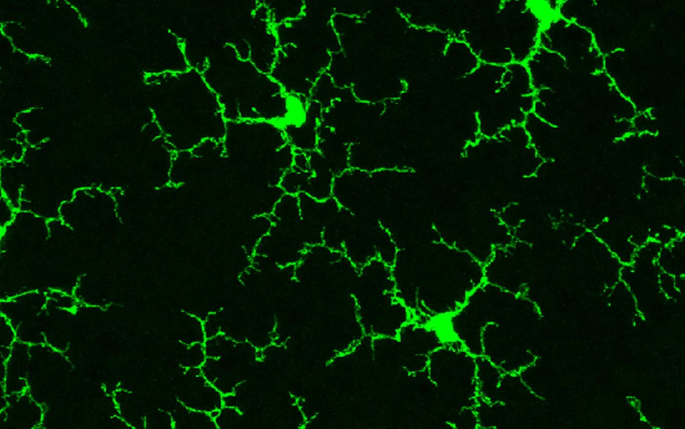
Your immune system helps you think. Remember the last time you had a cold or the flu? You probably felt pretty lousy—chills, fever, body aches, fatigue? Maybe you even felt a little depressed. It would be easy to blame the bug for these miserable symptoms, but what if I told you that your own body is making you feel this way? It turns out, the constellation of symptoms that most of us experience when we get sick is technically known as "sickness behaviors" and are caused by our own bodies.
Rather than being harmful side effects of an infection—for instance with an influenza virus or a rhinovirus (which causes the common cold)—sickness behaviors are carefully organized and orchestrated responses from your own immune system. How does this happen? For centuries of neuroscience research, it was believed that the immune and nervous system operated completely independently. Recent knowledge shows us it is very much the opposite—our immune system has evolved sophisticated mechanisms to talk to our nervous system, and vice versa, and thereby change our behavior, which you will learn about in this chapter. We will discuss the many ways that these systems communicate and the implications for how our brains work, in both healthy conditions and during illness or injury.
But why would our immune system need a way to change our behavior? Many research studies in species ranging from honeybees to mice to humans have now demonstrated that a change in behavior during an illness or infection—often referred to as a shift in motivational priorities—is helpful to our bodies in overcoming that illness. Think about it: if you are fighting an infection like the flu, your body is working hard and spending significant metabolic energy to do so. Does it make sense to keep running around town, going to school or work, playing sports or attending parties with friends? Or does it make better sense to rest and isolate until the infection clears? Put another way, which circumstance sounds easier for your hard-working immune system to manage? The latter, of course. If you rest your body, that frees up metabolic resources for your immune system to fight. Our immune systems therefore evolved efficient mechanisms to impact our nervous systems and alter behavior.
This crosstalk between the immune and nervous systems doesn't only happen when we are sick, however. It turns out our immune system has an impact on our behavior nearly all the time, particularly when we are stressed, when we encounter new (potentially dangerous) situations, or even when we are feeling romantic. There are multiple protein signals which make up the messengers of the immune system and these messengers impact our emotions, our mood, and our thinking abilities. These systems are like chatty teenagers, more-or-less constantly updating one another of their activities. This communication can be helpful and adaptive. However, there are times when the immune system fails to turn off its activity properly, and this can lead to neurological problems and pathology. There is growing evidence that immune cells that reside within the brain (in particular, one cell type called microglia) are important in neurological disorders that appear early in life, such as autism spectrum disorder and schizophrenia, as well as in degenerative disorders that occur at the other end of the lifespan, including Alzheimer’s disease. Many researchers now seek to understand why and how this switch occurs between adaptation and pathology in neuroimmune function, thus transitioning from health to disease.
In this chapter, we begin with a brief overview of the immune system and examine many of the signaling pathways between the nervous and immune systems throughout the body. We will examine changes in behavior during illness or in response to stressors as some of the strongest (and earliest) evidence that the nervous and immune systems powerfully impact each other. We end by discussing some of the ways that immune cells can alter neuronal structure and function in the brain, during health as well as disease, and therefore mood and cognition. Neuroimmunology is one of the youngest areas of neuroscience, and also one of the most exciting and fastest growing!
17.1Cells and Messengers of the Immune System
By the end of this section, you should be able to
- Describe the basic components (tissues, organs, and cells) of the immune system and define important terms.
- Identify key functional differences between the innate and adaptive immune systems.
- Describe the historical context of immune privilege within the brain and the new information that has changed this understanding.
- Describe the immune components in the brain and how they differ from what is in the periphery.
The immune system is complicated, just like neuroscience. There are many terms and labels for components of the immune system that may seem overwhelming at first, a bit like learning an entirely new language. The goal of this section is therefore not to learn all of immunology but to introduce you to the major players within the immune system and to describe some of the fundamental mechanisms by which this system functions. It will provide just enough of a foundation for you to understand another complicated topic, which is how the nervous system interacts with the immune system, and how and why these interactions can impact our behavior.
The peripheral immune system
The peripheral immune system can be roughly divided into two basic divisions, the innate or nonspecific immune system, and the adaptive or specific immune system (see Innate and adaptive immunity).
![Three part diagram of the three major phases of immune response, arrange with time along the x-axis of the image. Innate immunity is diagramed as three different looking cells attacking bacteria or virus on the scale of 0-12 hours. Innate (non-specific) immune response is rapid and general. Adaptive immunity (first exposure) shows a variety of similar shaped cells with different colors as the adaptive immune cells. Adaptive immune responses develop over days and are specific to each pathogen exposure. The adaptive immune response (second exposure) has group of 5 adaptive immune cells, all the same color, attacking a single pathogen with text “I remember you!”. Adaptive immune responses are more robust for pathogens you have encountered before.](../assets/textbook/img/Image-17.10_Innate-and-adaptive-immunity.webp)
The innate immune system generates responses to stimuli like pathogens (for instance, germs like bacteria or viruses). Its responses are roughly the same each time, regardless of the specific pathogen encountered. Thus, the responses of the innate immune system are non-specific. This is the first line of defense and happens fast. In contrast, the adaptive immune system ramps up more slowly and adapts over time, such that a second encounter with the same pathogen (like a virus) will generate a more vigorous response compared to the initial response. This is exactly what happens when you receive a vaccination against the “flu” (influenza virus) or against SARS-CoV2 (the virus which causes Covid-19). Most vaccines contain small, inactive pieces of a pathogen that cannot infect you, but can help teach your adaptive immune system what a pathogen looks like. Your initial immune response to the vaccine protects you against any later exposure because you generate immunological memory for that pathogen. This latter response is specific because the cells of the adaptive immune system learn precisely which pathogens they have previously encountered and respond only to that specific pathogen upon seeing it again, and not others. This selectivity for specific pieces of foreign material is critical for preventing autoimmune reactions which can occur when our immune cells mistake our normal cells for pathogens and attack them. There are important aspects of both innate and adaptive immunity for neuroscience and for behavior. Throughout this chapter we will consider many of these examples. We begin by learning some basics of these two components of the peripheral immune system.
Innate immune system
The innate immune system consists of physical barriers of the body including the skin (epithelium) and mucosal surfaces of the gut, lungs, and other exposed areas, as well as several critical cell types: neutrophils, macrophages, and monocytes (Innate immune structures and cells).
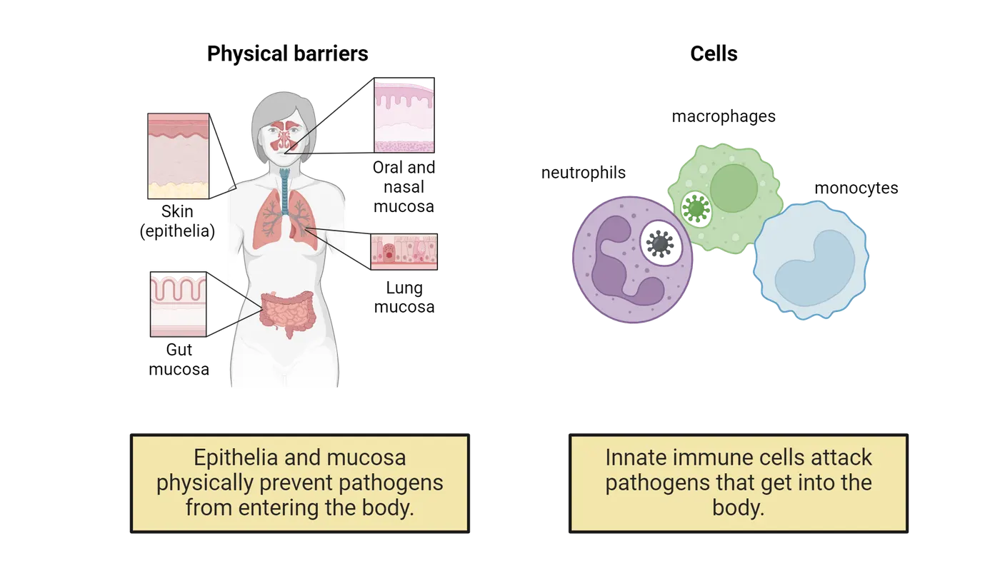
All three types of innate immune cells respond broadly to multiple pathogens, which they can detect using a number of pattern recognition receptors on their cell surface (Pathogen-associated molecular patterns). These receptors can detect evolutionarily conserved pathogen-associated-molecular-patterns (PAMPs) present on bacteria, viruses, fungi, or other foreign invaders.
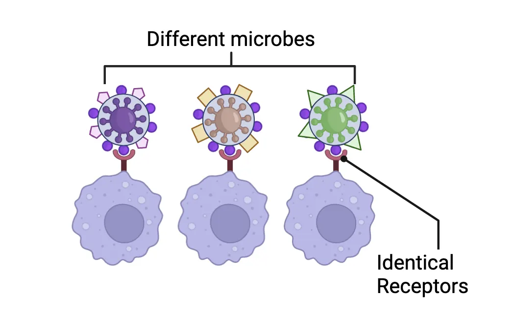
How each of these cellular components of the innate immune system functions once they detect these PAMPs is diagrammed in Innate immune cells in action, using the case of a penetrating skin wound that introduces some bacterial pathogens as an example. We will discuss what each cell type does in more detail below.

Neutrophils are a type of white blood cell that are affectionately known as the soldiers or footmen of the immune system. These cells react exquisitely fast and pour into infected or injured areas and unleash a battery of potent pathogen killing defenses—these cells largely create the oozing “pus” in wounds, which is basically an accumulation of dead neutrophils that have finished doing their thing. Neutrophils can also quite literally spit out their DNA in nets (called extracellular traps) to capture pathogens and pull them back in for elimination (Papayannopoulos, 2018)!
A second major player in innate immunity and in repair mechanisms is the macrophage (Greek for “big eater”), which is a type of phagocyte (phagocytic cell) meaning that they are good at eating and digesting things. These cells eat pathogens, as well as dead cells and debris, and thus are critical for overall tissue homeostasis and wound healing. They are also one of the primary antigen presenting cells (APC) along with B cells and dendritic cells. An antigen is a tiny portion of a cell or pathogen that gets processed after an APC chews it up and it gets “presented” to an adaptive immune cell like a T cell, which we cover in the next section, in order to activate that cell and mobilize a full immune response. A critical part of innate defense involves activation of the complement cascade, a series of proteins that have diverse functions including opsonization or “tagging” of pathogens for removal/phagocytosis by an APC (usually a macrophage). Complement proteins can also directly kill pathogens via punching holes in their cell membranes, as well as activate some adaptive immune cells.
A final cell type within the innate immune system important for our study of neuroimmunology is the monocyte, which is a cousin of the macrophage. Monocytes circulate freely within the blood and lymphatic system (e.g. lymph nodes) where they constantly scan for any sign of trouble. Once a pathogen or chemotactic signal (basically a “come help” signal) from another immune cell is detected, monocytes can extravasate (crawl) into tissues like the skin or adipose and thereby become macrophages (or “tissue-resident” monocytes).
Innate immune responses are rapid and stereotyped, meaning that they occur with the same time course and magnitude each time and somewhat regardless of the specific pathogen detected. One major consequence of the innate immune cell response is inflammation. Inflammation is the term we use to describe how tissues become red, swollen and hot after an injury or pathogen exposure of some kind. When inflammation happens in tissues in your body, it is also often painful (see Introduction).
Inflammation is quite a buzz word these days as it is implicated in many different diseases ranging from heart disease to depression to Alzheimer’s disease (Inflammation-associated diseases). There is good reason for this attention, as inflammatory processes that last too long, especially within the brain, can be very harmful. It is important to remember however that inflammation is classically defined in immunology by heat, swelling, pain, and importantly, repair. Thus, inflammation is helpful when properly controlled and only becomes harmful when it fails to resolve, which is a theme that we will visit repeatedly throughout this chapter.
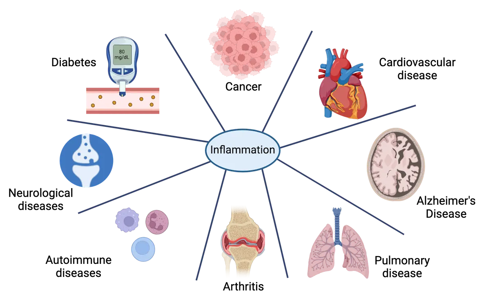
Taken together the role of innate immune cells is to quickly neutralize or contain pathogens and to mobilize the entire immune system, including the brain, in immune defense. Their parallel function is to notify the adaptive immune system which begins to generate a more specific and enduring response via the generation of memory cells.
Adaptive immune system
The adaptive immune system consists primarily of another class of white blood cells called lymphocytes, which consists of B cells and T cells. B cells are so-called because they are born in the bone marrow (like all blood cells). B cells make antibodies which are soluble (secreted) proteins produced in response to antigen stimulation and which make up the humoral immune response. This humoral immune response is generated within the extracellular spaces (the “humors” of the body, e.g. blood and lymph) and is important for neutralizing pathogens before they enter cells. Each antibody recognizes a single antigen, and each B cell generates a single type of antibody (B cell function).
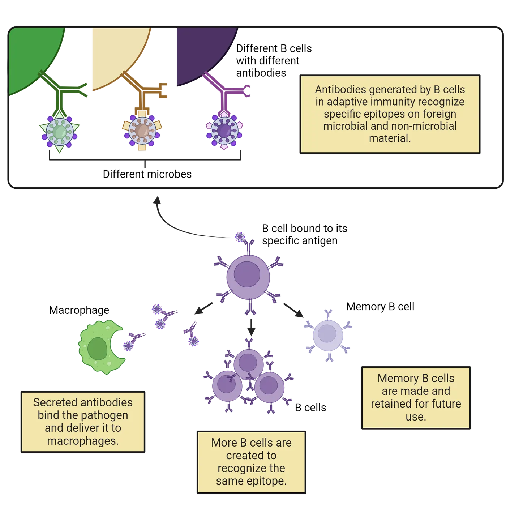
There is a tremendous diversity of B cell receptors in your body which ensures maximal recognition of dangerous things that might make us sick. These cells are fairly sophisticated as well: B cell receptors get thoroughly “fit tested” early in their life to ensure they are not responding to your own cells (which is critical to prevent autoimmunity). If they do respond to so-called “self-antigens”, they are immediately eliminated. Indeed, most B cells will die a quiet dignified death without ever finding their non-self antigen match (this again is a good thing, as otherwise our bodies would be overrun with B cells). However, a small subset will find their match! Once a match between antibody and antigen occurs, that particular B cell will start to make many copies of itself. This process takes time; by the end of about a week, around 20,000 clones of that original B cell will be produced. This creates an army of antibody-producing soldiers—each one of which can then produce an astounding number of antibodies—about 2000 per second!
What do antibodies do? Interestingly, they don’t directly kill anything. Rather, they tag (label) pathogens for recognition and removal by a macrophage. Antibodies can also bind to viruses and prevent them from entering cells, in a process called neutralization. Memory B cells are also produced during this process, which are very long-lived cells that can much more rapidly begin to replicate themselves and produce antibodies if they encounter the same antigen again. Remember vaccines? The production of memory B cells in response to vaccination is crucial to confer long-term protection.
T cells are called T cells because, while they are born in the bone marrow like all blood cells, they grow up and attend primary school in the thymus. T cells are responsible for cell-mediated immunity (which is concerned with the killing of pathogens inside of cells, see B vs T cells) and they come in several flavors:
- Helper T cells which “help” or amplify other immune cell activities
- Cytotoxic or “Killer” T cells which, as the name suggests directly kill infected cells and thus the pathogens within them
- Regulatory T cells, which again as the name suggests, regulate the activities of other T cells
- Memory T cells which get generated in response to specific infections and mediate long-term immunity to these same pathogens in collaboration with Memory B cells, and several other types which we won’t discuss.
Suffice to say, it’s complicated and beyond the scope of this chapter to understand them all. The most important bit for our topic is that T cells generate receptors on their cell surface during their development in the thymus to precisely respond to a single pathogen via a very similar process to B cells. They form a primary arm of the adaptive immune response and the loss or dysfunction of these cells can be devastating. Acquired immunodeficiency syndrome (AIDS) in humans is due to a loss of helper T cells after infection with human immunodeficiency virus (HIV), which highlights their importance.
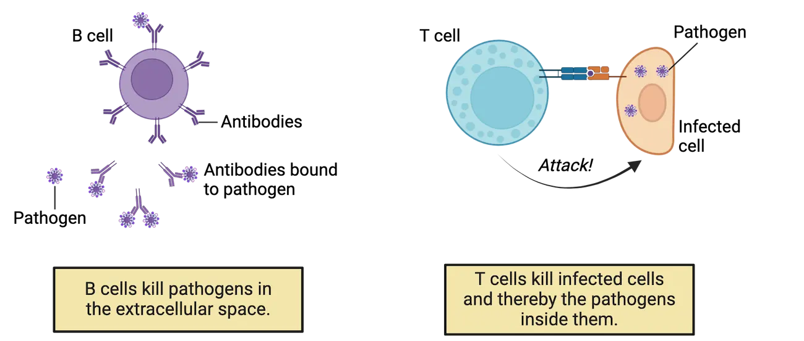
T cells are called into action to attack infected cells following their activation by professional APCs like macrophages, which “present” antigen to the T cell using a molecule called the major histocompatibility complex, or MHC, also known as human leukocyte antigen (HLA) in humans. T cell attacks are very specifically targeted to only infected cells with the epitope (a small fragment of an antigen) the T cells have learned to recognize, not healthy cells and not even the APCs displaying that pathogen epitope. The MHC is critical to this selectivity. MHC comes in two forms: class I and class II. All APCs have class II, and all cells of the body have class I. Whether an epitope is displayed to a T cell using MHC class I or class II will help determine whether a T cell decides to try to kill that cell, leave it alone or learn from it.
Under healthy conditions, host cells (i.e. your own cells) use MHC I to display a tiny bit of themselves, a self-antigen, on its cell surface (step 1 of MHC complexes and self vs pathogen recognition). This tells the T cell “I’m you! Don’t kill me!”. This presentation of a bit of “self” by MHC I is a crucial step because it prevents T cells from killing any healthy cells. MHC/HLA molecules are the reason that organ transplantation in humans is a bit tricky—you can’t just take any liver and give it to someone that needs it, unfortunately—it has to be a close match in terms of HLA type (sort of like blood type) or the receiving person’s immune cells (and antibodies) will rapidly detect and attack it, leading to organ failure. In contrast to all other cells in our body, APCs use MHC class II to package and display epitopes on their cell surface for the purpose of activating T cells (step 2 of MHC complexes and self vs pathogen recognition). The T cell learns about the pathogen epitope that the APC displays, and it also knows not to kill the APC because it is displayed with MHC II. This again prevents the T cell from going rogue and killing things without permission. They are pretty potent cells! However, if a normal cell, say a kidney cell, gets infected with a virus, it will use MHC class I to package part of that virus into a small digestible form and wave it like a flag on its cell surface. This tells any passing T cell (with a receptor that recognizes that specific antigen) that the cell has been invaded and the T cell will then kill and remove the cell and its virus (step 3 of MHC complexes and self vs pathogen recognition). We will learn in a subsequent section about a subset of T cells that are important for inflammatory bidirectional communication between the brain and the immune system. We will also further discuss how T cells seem to be critical for normal behavior, specifically learning and memory.
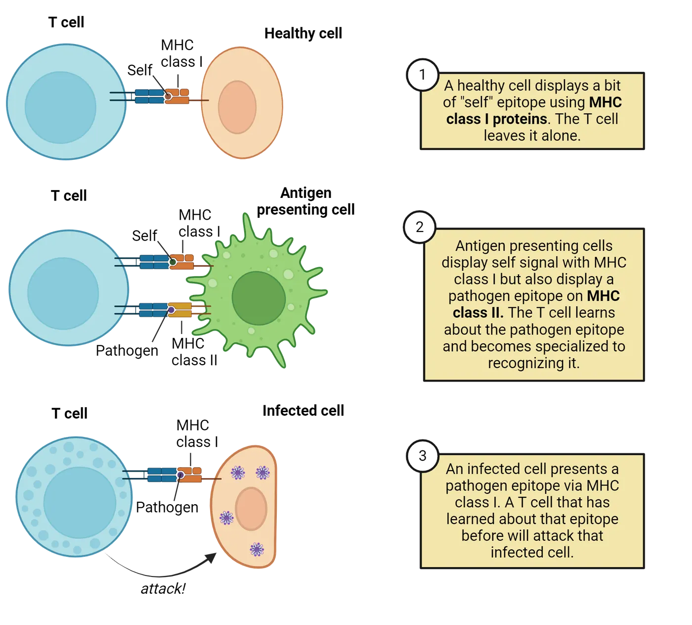
Interestingly, MHC is another source of diversity building for the immune system (meaning the ability to respond to a vast number of potential antigens), as the genes that encode MHC (and HLA in humans) are some of the most diverse in the entire genome. There is fascinating literature showing that animals like mice, other mammals, birds, and even fish may choose their mates based on their detection of MHC gene polymorphisms, likely via pheromonal cues contained in urine. Specifically, animals choose mates that have MHC genes least like their own, ensuring that their offspring will inherit the largest possible diversity of genes important for building a robust immune defense. Whereas this has been shown for many species (Grob et al., 1998; Roth et al., 2014; Rymešová et al., 2017), the possibility in humans remains tantalizing but controversial (Havlicek and Roberts, 2009; Havlíček et al., 2020).
Cytokines and chemokines
All cells need good communication. Immune cells, and many other cell types in the body, use cytokines and small “chemotactic” cytokines called chemokines to signal over long distances. Cells of both the innate and adaptive immune systems secrete cytokines and chemokines as a part of their response to pathogens. Immune cells in the brain, which we will learn about shortly, also produce these potent signaling molecules. Among cytokines are several “families”, including tumor necrosis factors (TNF), interferons (IFN), interleukins ([IL]-1 through IL-36 and counting), and others. Cytokines serve a wide variety of functions including signaling between cells and coordinating inflammation. They are produced by and affect a wide variety of cells in the brain and body. Chemokines are a type of cytokine that induce cell movement via chemical signals or gradients. An equally lengthy list of chemokines from several structural families has been described, which mediate diverse functions including cell adhesion, chemotaxis (or directed cell movement towards a signal source), and leukocyte (white blood cell) trafficking.
The naming conventions of cytokines and chemokines are based on their chemical structure rather than their functions which is a bit unfortunate when you are trying to remember what different cytokines do! However, cytokines can be roughly divided into having pro-inflammatory (inflammation promoting) vs. anti-inflammatory (inflammation resolving) functions, although these outcomes are highly context-dependent. That is, sometimes they induce inflammation and sometimes they prevent it, and the impact often depends on the receiving cell. While acute and local inflammation/immune activation caused by the pro-inflammatory cytokines is necessary for responding to insult or injury, homeostasis and health are restored and tissue repair is elicited by regulatory anti-inflammatory processes. Cytokines released by innate immune cell response to pathogens also mediate the activation of T and B lymphocytes, which play a critical role in the adaptive immune response later in the time course of an infection.
Cytokines can induce the production of other cytokines, chemokines and inflammatory mediators, and rarely work alone, but rather in a cascade with other cytokines. You may have heard the term “cytokine storm,” which is more or less what it sounds like: when one cytokine induces the production of another, which induces another, and so on, until you have a whole storm of swirling cytokines within a given organ or tissue. Cytokine storm shows an example of the cytokine storm process as it happens following SARS-CoV2 infections in the lungs. This is one of the major causes of death with Covid-19; the cytokine storm causes excess inflammation that damages lung cells and restricts airflow. Cytokine storms can occur in multiple kinds of severe infection and are generally bad news as it can lead to organ failure or death.
![Diagram showing human lungs with zoom-in on a single alveoli, which looks like a circular bag with blood vessel underneath it. Inside the alveoli, the following steps are diagrammed: 1. Coronavirus infects lung cells. 2. Immune cells, including macrophages, identify the virus and produce cytokines. 3. Cytokines attract more immune cells, such as white blood cells, which in turn produce more cytokines, creating a cycle of inflammation that damages the lung cells. 4. Damage can occur through the formation of fibrin. 5. Weakened blood vessels allow fluid to seep in and fill the lung cavities, leading to respiratory failure.](../assets/textbook/img/Image-17.17_Cytokine-storm.webp)
For the purposes of this chapter, the important thing about cytokines is that they have neuromodulatory (i.e. “neuron modulating”) properties within the brain during infectious and inflammatory processes by acting directly on neurons and glia. For example, one well characterized PAMP used widely in neuroimmunology research is lipopolysaccharide, or LPS, which is the cell wall component of bacteria that induces a robust immune response if injected into experimental animals (or humans!). LPS induces a suite of changes in physiology, including white blood cell (e.g. monocytes, T cells, B cells) replication (proliferation), fever, and cytokine production. Cytokines released in response to LPS signal to the brain to induce rapid changes in behavior, including fatigue, loss of interest in eating and normal behaviors, e.g. social interactions, and maybe even a form of depression (called anhedonia). These behavioral changes are not caused by the pathogens themselves, but rather by cytokine signaling in the brain. They are widely regarded as adaptive because they help you to rapidly shift motivation to prioritize rest and recovery and help to overcome illness more quickly. We will learn more about these roles of cytokines in the next section. Cytokines are also constitutively expressed in healthy brain tissue and regulate such homeostatic mechanisms and behaviors as sleep, metabolism, and even cognition. Cytokine receptors in mammals have been characterized throughout the central nervous system (CNS), with high concentrations within brain regions important for these functions, including the hypothalamus, hippocampus, striatum, amygdala, and thalamus (Hopkins and Rothwell, 1995; Rothwell and Hopkins, 1995).
History of Neuroscience: Immune privilege within the brain
Everything we have discussed so far has focused on processes initiated by immune cells in the body. For the vast majority of history of research on the immune system and the CNS, these systems were thought to be completely separate, both physically and functionally. Thus, the brain was viewed as “privileged” i.e. separate from the impacts of the immune system. Scientists would specialize in the study of one or the other, and nary a thought would be given to the one not chosen. Even today this is somewhat the case, although it is slowly changing as new knowledge about the interconnectedness of these systems emerges. These stubborn beliefs formed for good reason. Physicians have noted for hundreds of years that tissue grafts (think organ transplants like kidneys or hearts) into the body will quickly be rejected and the tissue will die unless the immune system is powerfully suppressed—as noted above this is because any cells not possessing an MHC I complex consistent with “self” will be recognized as dangerous and quickly thrown out. But this is not the case within the brain—tissue grafts into the brain can live for a long time before they are eventually discovered and rejected (Medawar, 1948). Researchers at the time concluded that this meant the brain did not have any immune system components, and that peripheral immune components could not enter the brain. And they had several supporting observations to support that incorrect belief.
One major reason that early researchers thought the brain and immune systems did not interact is that there is a powerful barrier between the CNS and the rest of the body, called the blood-brain-barrier (BBB), which keeps most immune cells out of the brain (Blood-brain barrier) (see Introduction).
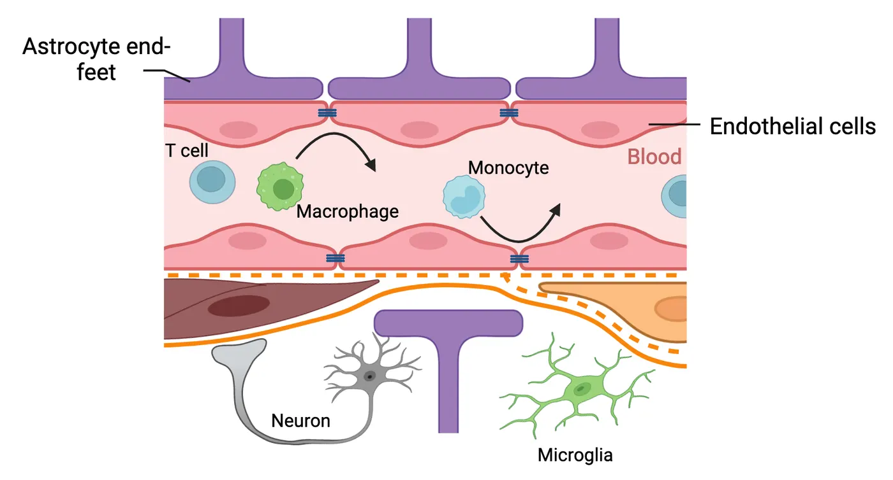
The BBB consists of closely joined endothelial cells, astrocytes, and other cells, which form a tight barrier between the brain and everything else. This barrier exists for good reason: the cells within the brain, namely neurons, are delicate, and once damaged, are difficult or impossible to repair. The blood can carry numerous pathogens that could damage these delicate neurons. There is also limited space within the skull, so if immune cells reacting to a pathogen entered the brain and launched a large immune response, any swelling associated with inflammation could be fatal. Most of the time, the BBB prevents the peripheral immune cells like macrophages and lymphocytes from entering the brain, thereby reducing the chance of an inflammatory event.
Though peripheral immune cells are mostly kept out of the brain, we now know that the brain is not completely without immune cells. Most prominently, it has resident immune cells: microglia. They make up ~10-15% of the cells in the brain, depending on brain region. They are so named because they have small cell bodies (relative to much larger neurons), but they are mighty in function. They have many elaborate processes that they use to continually scan and survey the brain tissue (Microglial morphology). They play essential roles in brain development, homeostasis, pathogen defense, and are increasingly implicated in brain pathology as well. For example, complement proteins can “tag” certain synapses for removal by microglia. This process is a part of normal development but may also have relevance in some neurodevelopmental disorders when proper synaptic “pruning” by microglia becomes disrupted. For instance, there is interesting recent evidence linking complement proteins within the brain to the neurodevelopmental disorder schizophrenia, which has long been recognized as a disorder of excessive synaptic pruning, potentially by microglia (see Introduction. In addition to microglia in the brain, there is some evidence that monocytes can cross into the brain in some circumstances, for instance in response to stressors or certain injuries, where they can contribute to behavioral changes, including anxiety. We discuss this in greater detail in subsequent sections as well.
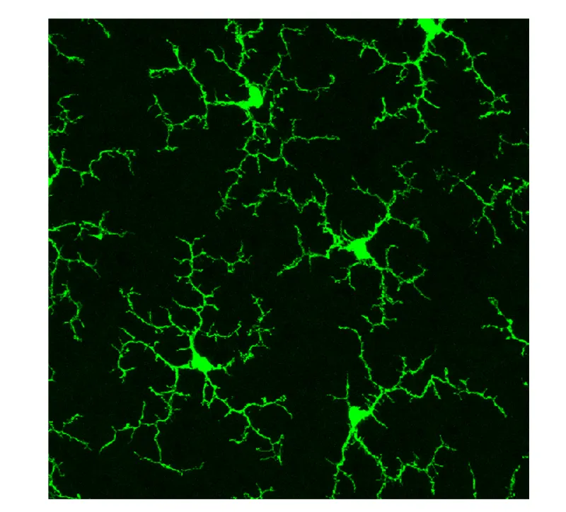
A second major reason the brain and immune systems were believed to be separate for so long is that MHC expression is very low under homeostatic conditions within the CNS, and for a long time, was not thought to be expressed at all. We now understand that the primary immune cells (and APCs) of the brain, microglia, are capable of upregulating MHC I and II, but that they only do so in the case of immune activation, e.g. due to injury or infection.
A third reason that early neuroanatomists believed that the immune and nervous systems were separate was the belief that the brain has no means of responding to presented antigens because it lacks a lymphatic system, along with the fact that very few lymphocytes (T cells and B cells) exist within the brain. Microglia upregulating MHC is all well and good, but who are they presenting antigen “to” if there are no T cells? (Remember that T cells use MHC on the surface of cells to recognize their antigen match and generate an immune response). This question also puzzled early researchers in neuroimmunology. Once again, we have new information from only the last several years—there is in fact an elaborate lymphatic system that runs throughout the brain (Iliff et al., 2015; Louveau et al., 2015), sort of like a drainage system that runs alongside blood vessels in the brain, and there are T cells that regularly patrol this lymphatic drainage system along with the meninges of the brain, the weblike casing between the brain itself and the skull. And, these T cells seem to talk to neurons (Alves de Lima et al., 2020) and other immune cells like microglia within these border regions of the brain. Indeed, they are even critical for normal cognition. Mice that completely lack T cells show impaired learning and memory abilities, even if the rest of their immune system is intact. Normal learning and memory can be restored by transplanting normal T cells back into the bloodstream of the mice (Kipnis et al., 2012), which then make their way back into the meninges enwrapping the brain. The exact function of these T cells once they make it back into the brain is not entirely known, but it is clear that having a healthy immune system is important for many aspects of health and behavior beyond fighting infections.
Summary
The immune system is broadly divided into innate and adaptive responses. Innate responses are rapid, non-specific, and stereotyped, meaning that they occur in more or less the same pattern and intensity each time a pathogen or antigen is encountered. Adaptive responses are specific to the antigen encountered, ramp up slowly, and build long-term memory for specific pathogens. The immune system uses a diverse army of signaling molecules called cytokines and chemokines to communicate among its distinct cell types, as well as with the nervous and endocrine systems. The brain was once thought to be completely separate from the immune system, but we now know that it has its own resident immune cells- microglia- and likely is more exposed to peripheral immune cells than originally thought.
Key terms
Innate immune system, adaptive immune system, pathogen, neutrophils, macrophage, phagocyte, antigen presenting cells (APC), B cells, antigen, T cell, complement cascade, monocyte, lymphocytes, antibodies, thymus, major histocompatibility complex (MHC), human leukocyte antigen (HLA), cytokines, chemokines, lipopolysaccharide (LPS), fever, blood-brain-barrier (BBB), lymphatic system, meningesReferences
Alves de Lima, K., Rustenhoven, J., Da Mesquita, S., Wall, M., Salvador, A. F., Smirnov, I., Martelossi Cebinelli, G., Mamuladze, T., Baker, W., Papadopoulos, Z., Lopes, M. B., Cao, W. S., Xie, X. S., Herz, J., & Kipnis, J. (2020). Meningeal γδ T cells regulate anxiety-like behavior via IL-17a signaling in neurons. Nature Immunology, 21(11), 1421–1429. https://doi.org/10.1038/s41590-020-0776-4
Grob, B., Knapp, L. A., Martin, R. D., & Anzenberger, G. (1998). The major histocompatibility complex and mate choice: Inbreeding avoidance and selection of good genes. Experimental and Clinical Immunogenetics, 15(3), 119–129. https://doi.org/10.1159/000019063
Hanisch, U. K. (2002). Microglia as a source and target of cytokines. Glia, 40(2), 140–155. https://doi.org/10.1002/glia.10161
Havlicek, J., & Roberts, S. C. (2009). MHC-correlated mate choice in humans: A review. Psychoneuroendocrinology, 34(4), 497–512. https://doi.org/10.1016/j.psyneuen.2008.10.007
Havlíček, J., Winternitz, J., & Roberts, S. C. (2020). Major histocompatibility complex-associated odour preferences and human mate choice: Near and far horizons. Philosophical Transactions of the Royal Society of London. Series B, Biological Sciences, 375(1800), 20190260. https://doi.org/10.1098/rstb.2019.0260
Hopkins, S. J., & Rothwell, N. J. (1995). Cytokines and the nervous system. I: Expression and recognition. Trends in Neurosciences, 18(2), 83–88.
Iliff, J. J., Goldman, S. A., & Nedergaard, M. (2015). Implications of the discovery of brain lymphatic pathways. The Lancet. Neurology, 14(10), 977–979. https://doi.org/10.1016/S1474-4422(15)00221-5
Kipnis, J., Gadani, S., & Derecki, N. C. (2012). Pro-cognitive properties of T cells. Nature Reviews. Immunology, 12(9), 663–669. https://doi.org/10.1038/nri3280
Lord, G. (2002). Role of leptin in immunology. Nutrition Reviews, 60(10 Pt 2), S35–87. https://doi.org/10.1301/002966402320634913
Louveau, A., Smirnov, I., Keyes, T. J., Eccles, J. D., Rouhani, S. J., Peske, J. D., Derecki, N. C., Castle, D., Mandell, J. W., Lee, K. S., Harris, T. H., & Kipnis, J. (2015). Structural and functional features of central nervous system lymphatic vessels. Nature, 523(7560), 337–341. https://doi.org/10.1038/nature14432
Papayannopoulos, V. (2018). Neutrophil extracellular traps in immunity and disease. Nature Reviews. Immunology, 18(2), 134–147. https://doi.org/10.1038/nri.2017.105
Roth, O., Sundin, J., Berglund, A., Rosenqvist, G., & Wegner, K. M. (2014). Male mate choice relies on major histocompatibility complex class I in a sex-role-reversed pipefish. Journal of Evolutionary Biology, 27(5), 929–938. https://doi.org/10.1111/jeb.12365
Rothwell, N. J., & Hopkins, S. J. (1995). Cytokines and the nervous system II: Actions and mechanisms of action. Trends in Neurosciences, 18(3), 130–136. https://doi.org/10.1016/0166-2236(95)93890-a
Rymešová, D., Králová, T., Promerová, M., Bryja, J., Tomášek, O., Svobodová, J., Šmilauer, P., Šálek, M., & Albrecht, T. (2017). Mate choice for major histocompatibility complex complementarity in a strictly monogamous bird, the grey partridge (Perdix perdix). Frontiers in Zoology, 14, 9. https://doi.org/10.1186/s12983-017-0194-0
Practice The multiple-choice and fill-in-the-blank questions for this section are interactive and live on OpenStax, so they are not carried here: open the book on openstax.org.
17.2What Does Your Immune System Have to Do with Your Behavior?
By the end of this section, you should be able to
- Define sickness behavior and its adaptive function.
- Discuss the role of cytokines in mediating sickness behavior.
A critical weapon in our arsenal of immune defenses is very often overlooked, and that is behavior. “Sickness behaviors” are the suite of changes we exhibit during illness, including lethargy (fatigue), changes in cognition and motivated behaviors, and loss of appetite. We already discussed one example of this–the sickness behavior animals show after injection with the bacterial component LPS–in the previous section. Injection with LPS is one of the models researchers have used to observe and better understand behavioral and motivational responses to infection. Very often these shifts in motivation may be the first changes that are apparent after infection, before other unpleasant symptoms emerge. Thus, we essentially have a “sixth sense” about immune activation (Blalock, 2005). Our awareness of our own infection state is mediated in part via low level detection of infectious molecules by pattern recognition receptors on sensory nerve afferents, which we will cover in later sections. So, even if we don’t fully “know” we are sick, parts of our brains certainly do, and mobilization of our immune defense has already begun. We now know that the robust behavioral changes that occur are adaptive, at least in the short term.
Immune system impacts on behavior
The term “sickness behavior” was first coined by a very observant veterinarian named Benjamin Hart who noticed that all sick animals in his care (typically cows or other livestock) seemed to exhibit the same stereotyped behavioral changes when sick: they would stop eating, socially isolate, and sleep a lot. Moreover, he noticed that force feeding the animals or otherwise interfering in their behavior typically made the illness worse. Thus, he proposed the rather controversial hypothesis for the time that these behaviors are happening for a good reason, and to interfere in the behavior was somehow hampering with the immune system (Hart, 1988). Many experiments since his initial observation in multiple species ranging from bumblebees to humans have supported this claim (Devlin et al., 2021).
Fever is often the first unwelcome sign of infection. We often rush to treat illnesses using fever reducing medications. However, there is quite a lot of evidence suggesting this isn’t always the wisest course of action. Despite how miserable it can make you feel, fever is helpful in our fight against infection. This is because bacteria and viruses are actually pretty wimpy, and die off once the room (i.e. your body) gets too hot. Fever is not a behavioral response in mammals, but it is in lizards (which are ectothermic and thus regulate their body temperatures via their external environments; see Introduction). Some of the first studies to directly test the hypothesis that fever is adaptive were done by Dr. Matthew Kluger (Kluger et al., 1975)—he injected a nasty bacterium (Aeromonas hydrophila) into iguanas and then watched what they did (Benefits of fever). Every one of the animals moved to a warmer part of their terrarium, directly under the heat lamp. Next, Dr. Kluger determined what happened if some were prevented from moving to the warm end of the terrarium; sadly, those that were confined to the cold end, and could not induce a behavioral “fever”, died.
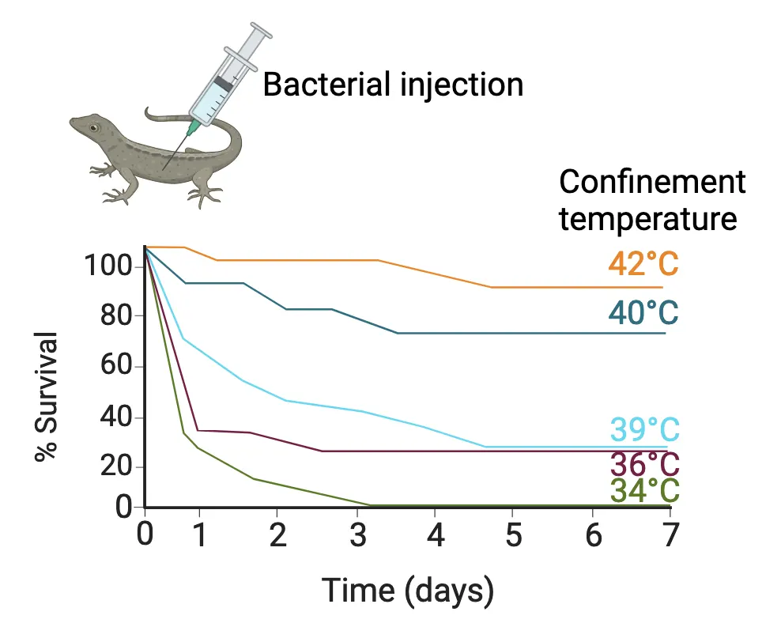
How the immune system makes the brain feel sick
Experiments in mammals, typically rodents, have begun to tease out the mechanisms by which sickness behaviors occur. In Cells and Messengers of the Immune System, we discussed one example of the kinds of experiments used to understand how sickness behavior happens. Injection of a PAMP like LPS will induce sickness behavior, even though it is not a live pathogen at all—it is simply the empty shell of a bacterium, but our immune cells recognize it as if it is. These experiments tell us that infectious pathogens themselves are not the cause of sickness behavior. Instead, it is our immune response, specifically the cytokines our immune cells release.
Experiments using cytokines themselves have helped to prove that these proteins impact brain function (and therefore behavior). Though most cytokines are large proteins which do not directly cross the BBB, their signaling is frequently relayed across the barrier and recapitulated by immune cells in the brain (see Feature Box). For example, direct injection of a pro-inflammatory cytokine (like one called IL-1β which is robustly produced in response to many infections) will induce sickness behaviors in a perfectly healthy animal, and blocking cytokine receptors (which IL-1β binds to in order to induce its biological effects) within the brain will prevent sickness behaviors, even if the infection is ongoing. Blocking cytokines during illness is generally bad news for the host, however, and increases the time to recovery.
These collective experiments demonstrated two things: sickness behaviors are mediated by cytokines acting within the brain, and blocking their expression prolongs illness or even leads to death. This can stand as a cautionary tale to many of whom may be tempted to push through illnesses unheeded—it’s far better to isolate and rest when we are sick as we are likely to get well sooner and come out ahead in the long run.
The effect of cytokines on the brain extends beyond just encouraging us to take a nap. When I talk to students about this concept, one of the things they find most surprising is the evidence that cytokines can impact our thinking abilities. For instance, in the context of sickness, we can feel “brain fog” or confusion for some time. However, the evidence extends beyond illness. Some cytokines are important for the cellular mechanisms underlying memory formation even when animals are healthy. For instance, experimental animals that completely lack these cytokines have been reported to have dramatic memory problems (Avital et al., 2003). It’s a Goldilocks phenomenon—cytokine levels that are either too low or too high impair cognition, whereas levels that are just right, are beneficial (Nemeth and Quan, 2021).
Environment-Brain Bidirectional Communication: Flexible sickness behavior
One requirement for a biological trait to be considered beneficial, or adaptive, is that it should be flexible or plastic according to the environmental constraints of the animal. For instance, staying in bed when you are sick is good, unless your house catches fire! Then it is much more adaptive to quickly run out of the house. In one important experiment in mice, researchers injected a mother (dam) of small babies (pups) with the bacterial mimic LPS and then watched how well the dam maintained her nest of shredded cotton provided in the cage (Sickness and motivation) (Aubert et al., 1997). Normally mouse dams maintain perfect little nests, cocooning their pups inside where it is warm. Dams injected with LPS, however, did not build good nests, and pups were scattered around the cage. These moms were instead engaged in sickness behaviors, sleeping in a corner. Then the researchers added a twist. A second group of dams was injected with LPS, but the temperature in the room where their cages were located was lowered to 6 degrees Celsius (cold!). These moms promptly began to build nice cozy nests and gather their pups close—the pups would otherwise die in the cold temperatures. Thus, the sickness behaviors were flexible to the environmental constraints of the mothers, which is beneficial in the “ultimate” sense, i.e. the ability to pass on one’s genes to the next generation.
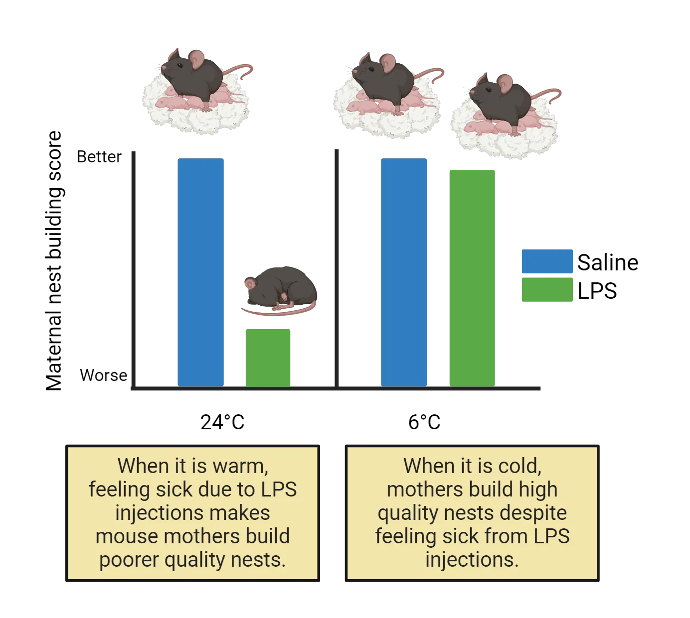
There are many other examples of this behavioral plasticity in the course of sickness. For instance, females of many species decrease sexual receptivity following infection or injections of LPS, whereas males do not (Yirmiya et al., 1995). This makes sense, as reproduction is much more energetically costly in females. In humans, there is an interesting literature on reward processing in response to an inflammatory challenge. In one study, researchers gave healthy volunteers a typhoid vaccine (which they needed for some upcoming travel) or a placebo, and then measured their risk-taking behavior in a gambling task. Specifically, they measured the volunteers' tendency to select a high probability reward for little money vs. a low probability reward for more money. The volunteers that received the vaccine were more likely to choose the sure thing with the lower payoff; hence they were more risk averse. Their brain activity reflected these choices—the risk averse participants receiving the vaccine showed greater activity within the ventral striatum and anterior insula, two regions that are important for “punishment prediction” (Harrison et al., 2016). The remarkable thing about this study is that participants reported no discernible effects of the vaccine—that is, they didn’t “feel” sick, but their brains were clearly making different choices! It is for this reason that I always caution my students not to make any big decisions on the day they receive their flu vaccine.
In another study, researchers gave volunteers a very low dose of LPS and measured neural activity within several brain regions using fMRI. During the scan, the participants received feedback from what they thought was a peer (but was really a confederate, i.e. someone working with the experimenters) about an oral performance they had completed earlier. The feedback was either negative, positive, or neutral, but had nothing to do with their actual performance. Remarkably, those participants that received LPS (vs. a control injection of saline) showed greater activation of threat-related neural regions such as the amygdala and anterior cingulate cortex in response to negative feedback. Interestingly, a similar principle was true for positive feedback and reward system activation—greater neural activation of brain regions important for reward, like striatum, in subjects who received LPS vs the control injection. Thus, overall, the inflammatory challenge led to changes in the perception of both positive and negative feedback; the subjects who received LPS were essentially just more sensitive (Muscatell et al., 2016). Once again, we can imagine how behaving a bit more cautiously in the face of acute immune stimulation may be very adaptive for our survival and ultimate fitness.
When sickness drags on
So far, we’ve discussed examples by which immune system impacts on behavior are adaptive for the host. Some of you might still be a bit skeptical, and you would be right to be so. Certainly, if a fever reaches too high, it can be very dangerous for the host. Similarly, if you compare the symptoms of depression to common sickness behaviors, there are some striking similarities: loss of appetite, social withdrawal, fatigue, and anhedonia, defined as a loss of interest in normal activities. In the case of major depressive disorder, these symptoms are no longer acute, but persist long-term (see Introduction). Landmark studies by Dr. Andrew Miller at Emory University have demonstrated an “inflammatory subtype” of major depressive disorder, in which chronic low-level expression of inflammatory cytokines in the blood of some patients predicts or correlates with depressive episodes or symptoms (Miller and Raison, 2016). These patients do not respond well to classic antidepressant therapies (for instance, selective serotonin reuptake inhibitors, or SSRIs) but they do improve following anti-inflammatory therapies, like cytokine inhibitors.
Depression is not the only psychiatric disorder with a well-described link to immune dysregulation. Schizophrenia, post-traumatic stress disorder (PTSD), generalized anxiety disorder, and autism spectrum disorder have all been linked to alterations in immune function (Müller and Ackenheil, 1998; Abazyan et al., 2010; Careaga et al., 2010; Garay and McAllister, 2010), although the mechanisms are still being worked out. Another set of disorders that are gaining attention for their potential link with immune system overactivation are chronic fatigue syndrome (also known as Myalgic Encephalomyelitis) and fibromyalgia, a widespread pain syndrome with poorly defined biological causes (Carruthers et al., 2011). Sometimes patients are dismissed by physicians due to a lack of diagnostic criteria and heterogeneous symptoms with no single cause. New evidence suggests it might be cytokine or immune cell activities within the brain inducing these symptoms.
Similarly, the percentage of patients presenting with the symptoms of “long covid” continues to grow. The symptoms they report include fatigue, pain, “brain fog”, and other symptoms consistent with long-term immune activation (i.e. sickness behavior), persisting long after recovery from Covid-19. The numbers of patients reporting long-covid symptoms have simply become too significant to ignore. Indeed, one silver lining of the Covid-19 pandemic may be the increased attention that CNS-immune disorders are now receiving by the medical community with the hope that new studies will open new doors in the fight against these types of devastating disorders more broadly. What remains poorly understood is why immune system activation becomes exaggerated or prolonged, even in the presumed absence of an initial infection or injury (e.g. in the case of chronic fatigue). However, we do know that many factors, including exposure to various stressors, age, sex, and our own behavior, can impact how the immune system functions, which can then feed back to impact the brain. It is a constant bidirectional loop. Thus, we consider next how behavior impacts the immune system, which gives us some insight into how this communication may become dysregulated.
Summary
In the face of acute illness, we have striking changes in our motivation and in our behavior, and these adaptive changes help us prioritize rest and isolation to overcome illness more quickly. These behavior changes are strongly influenced by cytokine signaling to the brain from immune cells responding to infection. In the long-term, however, these changes in sickness or stress-induced behaviors can become maladaptive, and the risk factors underlying this shift from a healthy immune response to a prolonged or pathological one are under intense investigation within the biomedical community.
Key terms
Sickness behaviorReferences
Abazyan, B., Nomura, J., Kannan, G., Ishizuka, K., Tamashiro, K. L., Nucifora, F., Pogorelov, V., Ladenheim, B., Yang, C., Krasnova, I. N., Cadet, J. L., Pardo, C., Mori, S., Kamiya, A., Vogel, M. W., Sawa, A., Ross, C. A., & Pletnikov, M. V. (2010). Prenatal interaction of mutant DISC1 and immune activation produces adult psychopathology. Biological Psychiatry, 68(12), 1172–1181. https://doi.org/10.1016/j.biopsych.2010.09.022
Aubert, A., Goodall, G., Dantzer, R., & Gheusi, G. (1997). Differential effects of lipopolysaccharide on pup retrieving and nest building in lactating mice. Brain, Behavior, and Immunity, 11(2), 107–118. https://doi.org/10.1006/brbi.1997.0485
Avital, A., Goshen, I., Kamsler, A., Segal, M., Iverfeldt, K., Richter-Levin, G., & Yirmiya, R. (2003). Impaired interleukin-1 signaling is associated with deficits in hippocampal memory processes and neural plasticity. Hippocampus, 13(7), 826–834. https://doi.org/10.1002/hipo.10135
Blalock, J. E. (2005). The immune system as the sixth sense. Journal of Internal Medicine, 257(2), 126–138. https://doi.org/10.1111/j.1365-2796.2004.01441.x
Careaga, M., Van de Water, J., & Ashwood, P. (2010). Immune dysfunction in autism: A pathway to treatment. Neurotherapeutics: The Journal of the American Society for Experimental NeuroTherapeutics, 7(3), 283–292. https://doi.org/10.1016/j.nurt.2010.05.003
Carruthers, B. M., van de Sande, M. I., De Meirleir, K. L., Klimas, N. G., Broderick, G., Mitchell, T., Staines, D., Powles, A. C., Speight, N., Vallings, R., Bateman, L., Baumgarten-Austrheim, B., Bell, D. S., Carlo-Stella, N., Chia, J., Darragh, A., Jo, D., Lewis, D., Light, A. R., Marshall-Gradisnik, S., … Stevens, S. (2011). Myalgic encephalomyelitis: International Consensus Criteria. Journal of Internal Medicine, 270(4), 327–338. https://doi.org/10.1111/j.1365-2796.2011.02428.x
Devlin, B. A., Smith, C. J., & Bilbo, S. D. (2022). Sickness and the social brain: How the immune system regulates behavior across species. Brain, Behavior and Evolution, 97(3-4), 197–210. https://doi.org/10.1159/000521476
Garay, P. A., & McAllister, A. K. (2010). Novel roles for immune molecules in neural development: Implications for neurodevelopmental disorders. Frontiers in Synaptic Neuroscience, 2, 136. https://doi.org/10.3389/fnsyn.2010.00136
Harrison, N. A., Voon, V., Cercignani, M., Cooper, E. A., Pessiglione, M., & Critchley, H. D. (2016). A neurocomputational account of how inflammation enhances sensitivity to punishments versus rewards. Biological Psychiatry, 80(1), 73–81. https://doi.org/10.1016/j.biopsych.2015.07.018
Hart, B. L. (1988). Biological basis of the behavior of sick animals. Neuroscience and Biobehavioral Reviews, 12(2), 123–137. https://doi.org/10.1016/s0149-7634(88)80004-6
Kluger, M. J., Ringler, D. H., & Anver, M. R. (1975). Fever and survival. Science (New York, N.Y.), 188(4184), 166–168.
Miller, A. H., & Raison, C. L. (2016). The role of inflammation in depression: From evolutionary imperative to modern treatment target. Nature Reviews. Immunology, 16(1), 22–34. https://doi.org/10.1038/nri.2015.5
Müller, N., & Ackenheil, M. (1998). Psychoneuroimmunology and the cytokine action in the CNS: Implications for psychiatric disorders. Progress in Neuro-Psychopharmacology & Biological Psychiatry, 22(1), 1–33. https://doi.org/10.1016/s0278-5846(97)00179-6
Muscatell, K. A., Moieni, M., Inagaki, T. K., Dutcher, J. M., Jevtic, I., Breen, E. C., Irwin, M. R., & Eisenberger, N. I. (2016). Exposure to an inflammatory challenge enhances neural sensitivity to negative and positive social feedback. Brain, Behavior, and Immunity, 57, 21–29. https://doi.org/10.1016/j.bbi.2016.03.022
Nemeth, D. P., & Quan, N. (2021). Modulation of neural networks by interleukin-1. Brain Plasticity (Amsterdam, Netherlands), 7(1), 17–32. https://doi.org/10.3233/BPL-200109
Quan, N., Whiteside, M., & Herkenham, M. (1998). Time course and localization patterns of interleukin-1beta messenger RNA expression in brain and pituitary after peripheral administration of lipopolysaccharide. Neuroscience, 83(1), 281–293. https://doi.org/10.1016/s0306-4522(97)00350-3
Vitkovic, L., Konsman, J. P., Bockaert, J., Dantzer, R., Homburger, V., & Jacque, C. (2000). Cytokine signals propagate through the brain. Molecular Psychiatry, 5(6), 604–615. https://doi.org/10.1038/sj.mp.4000813
Yirmiya, R., Avitsur, R., Donchin, O., & Cohen, E. (1995). Interleukin-1 inhibits sexual behavior in female but not in male rats. Brain, Behavior, and Immunity, 9(3), 220–233. https://doi.org/10.1006/brbi.1995.1021
Practice The multiple-choice and fill-in-the-blank questions for this section are interactive and live on OpenStax, so they are not carried here: open the book on openstax.org.
17.3How Does the Brain Talk to the Immune System?
By the end of this section, you should be able to
- Discuss how the immune system can be conditioned via learned associations.
- Describe the mechanisms by which the hypothalamic-pituitary-adrenal axis and immune system communicate with each other.
- Describe the mechanisms by which the autonomic nervous system communicates with immune systems.
The interactions between the immune system and brain are not a one-way street but move in both directions. Thus, our behaviors impact how our immune systems function. One particularly notable piece of evidence for brain regulation of immune function is that it turns out that learning a new association can impact how the immune system works in the body, for instance the levels of antibody in the bloodstream. Here, we’ll discuss some of the ways behavior—and for this we will define it as a perceptual process that begins in the brain and manifests as an action or output—can profoundly impact how our immune system works. In the process, we will further appreciate the two-way nature of these interactions, where the brain and immune system are constantly updating and influencing one another.
Behavioral conditioning of the immune system
How do we know that the brain talks to the immune system? In classical (or “Pavlovian”) conditioning in behavioral neuroscience, a previously neutral stimulus like a light or a bell (the conditioned stimulus) becomes associated with a particular outcome like fear-induced freezing (the conditioned response) because it is paired, over a few associations, with something like a foot shock (the unconditioned stimulus) (see Introduction). It turns out that our immune systems “learn” associations too. More accurately, our brains learn associations that are relevant for the immune response, and this results in a shift in its function in response to previously innocuous or irrelevant cues. An example—just as we can condition rats to “freeze” when they hear a bell because it signals a potential foot shock, it is possible to pair a particular tasting beverage with a change in antibody production. What?! Here’s how it works.
If you give a rat (or a person) a drug called cyclophosphamide and then inject the rat with a novel antigen that they would normally make antibodies against, the rat will show decreased production of the antibodies. This is because cyclophosphamide is an immunosuppressant drug used in some cancer therapies. If you give a rat some chocolate milk to drink alongside cyclophosphamide and then inject it with an antigen, it will again produce fewer antibodies. This is perhaps expected; chocolate milk itself should not change the immunosuppressant properties of cyclophosphamide. But here’s where it gets interesting—Later, if you give the rat chocolate milk alone, the rat will exhibit immunosuppression and produce fewer antibodies to the same antigen (Behavioral conditioning of immune responses). After chocolate milk!
![Diagrams of two different experiments with chocolate milk and antigen challenge. 1) Rats shown getting chocolate milk coupled with vehicle or cyclophosphamide (immunosuppressive drug), followed by exposure to a foreign antigen. A bar graph of blood antibody level (y-axis, low to high) versus treatment (vehicle, cyclophosphamide) shows that rats receiving cyclophosphamide show less immune response to the antigen than rats treated with vehicle. 2) Rats who previously had chocolate milk couple with cyclophosphamide shown getting antigen alone or antigen with chocolate milk. A bar graph of blood antibody level (y-axis, low to high) versus treatment (no milk, chocolate milk) shows that rats with no milk mount a normal immune response to the antigen. Rats treated with chocolate milk show immune suppression.](../assets/textbook/img/Image-17.20_Behavioral-conditioning-of-immune-responses.webp)
Experiments where stimuli get coupled to immunosuppressants work in humans too. These types of experiments, when they were first done in the early 1990s, were groundbreaking because they showed without question that the brain and the immune system must meaningfully talk to each other (Cohen et al., 1994). At that point, the race was on to determine the mechanisms underlying this crosstalk, which we cover below. But what are the larger implications of this type of conditioning? Is this just a weird party trick? It turns out the implications could be profound. For instance, one big problem in the treatment of many cancers is that patients experience nausea in response to the chemotherapeutic treatments. Worse yet is that the patients begin, because of classical conditioning, to associate the very environment in which they receive the treatments with nausea, even if they are no longer receiving any drug. This type of nausea can be completely debilitating, and for this reason some medical centers have begun to randomize the rooms in which patients receive their treatments in order to limit these associations. More troubling is the possibility that a given environment could on its own induce immunosuppression, much like that chocolate milk. This would be devastating for already immunocompromised patients during their recovery.
The good news is that just as the immune system can be suppressed via association, it can also be enhanced. There is evidence in rodents that transient activation of the so-called reward circuit of the brain, the ventral tegmental area, can augment immune responses like antibody production, bacterial killing, and even anti-tumor activity in the periphery (Ben-Shaanan et al., 2016, 2018). These results raise the possibility that such enhancement could be amenable to classical conditioning as well. Indeed, repeated pairings of a small amount of a novel antigen with chocolate milk can boost antibody production to the later presentation of the chocolate milk alone (Ader et al., 1993). This, in a way, is the opposite of the experiment where chocolate milk was coupled with an immunosuppressant drug. In this case, we pair the presentation of the antigen with the chocolatey treat, making the chocolatey treat itself stimulate antibody production (Behavioral conditioning of immune enhancement). Once again, the implications for these types of associations are profound, and they likely contribute to the “placebo effect” (Belcher et al., 2018), in which patient beliefs regarding a potential treatment are often just as powerful in causing a biological effect -in this case a change in the immune response- as the drug itself (see Introduction). This often doesn’t mean the drug doesn’t work, but rather that our neuroimmune link works well!
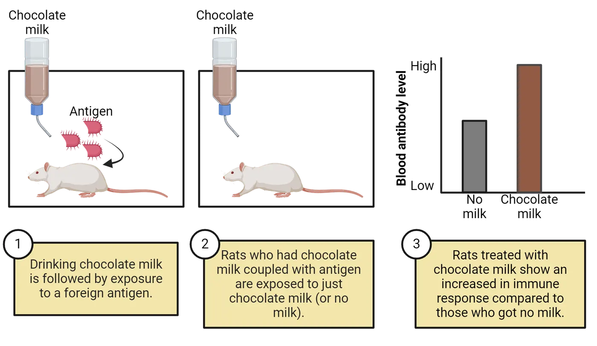
Stress and the immune system
What if I told you that stress is good for you? Specifically, stress is good for your immune system. First, let’s define some terms. A stressor is the thing that induces a biological response (like running from a raging bull or having to give a presentation in class). We call this biological response in its entirety a stress response. A major portion of the stress response is coordinated by the hypothalamic-pituitary-adrenal (HPA) axis. Neuroimmune communication pathways gives an overview of the HPA axis and its connections to the immune system and cytokines. Introduction covers the HPA axis in more detail. As a brief overview, during a stress response, hypothalamic cells release corticotropin releasing hormone (CRH) onto the pituitary gland. The pituitary gland, in turn, secretes and releases hormones such as adrenocorticotropin releasing hormone (ACTH) into the bloodstream. ACTH induces the release of glucocorticoids from the adrenal cortex (Turnbull and Rivier, 1999).
![Diagram showing the human hypothalamus and pituitary, where CRH neurons from the hypothalamus extend down into the connected pituitary gland. Adrenal glands, thymus and spleen are shown free floating outside of the brain, along with immune cells. The HPA axis cascade described in the main text is shown as being initiated by cytokines released from immune cells that have encountered a pathogen. The cycle is completed when adrenal hormones signal back to spleen and thymus to act in complex ways that can activate or inhibit them, thereby affecting immune cells.](../assets/textbook/img/Image-17.02_Neuroimmune-communication-pathways.webp)
Blood concentrations of circulating glucocorticoids increase in response to virtually any type of stimulus that poses a threat to bodily homeostasis, including immune system activation. During infection, cytokines profoundly activate the HPA axis. Cytokines produced by immune activation, such as IL-1β, IL-6, and TNFα, can act directly within the brain to induce the release of CRH via direct activation of neurons within the hypothalamus to start off the HPA cascade (Berkenbosch et al., 1987; Sapolsky et al., 1987). One of the first observations of brain-immune communication came from an experiment demonstrating that systemic administration of LPS causes an increase in the stress hormone, known as corticosterone, in rodents (Wexler et al., 1957). Since then, it is well understood that the release of stress hormones is an important component of immune activation.
Stressors mobilize the immune system, sort of like rallying the troops. If we consider the body as a battlefield (which from a pathogen’s perspective, it is!), we can think of immune organs like the spleen and lymph nodes as the barracks, where immune cell soldiers hang out playing cards and wait for a call to battle. When a stressor is perceived (which can be more “physical” like preparing to run from a bear, or “psychological” like sitting in traffic, late for class), the glucocorticoids that get released (like cortisol in humans) also bind to white blood cell soldiers in the barracks (mostly monocytes and neutrophils) which immediately jump into action, pour out of the spleen and lymph and into the bloodstream, and then crawl their way into the “battle stations” of the body—the skin, lining of the gut, and the lungs (Immune deployment with stress) (Dhabhar et al., 1996).
![Left is an outline of a human body with key immune organs shown: thymus (in the upper chest), lymph nodes and vessels throughout the body, spleen in the abdomen, bone marrow in the bones. At baseline, immune cells hang out in the spleen and patrol the lymphoid tissues, the “barracks”. Right is another outline of the human body but with lungs, skin, blood vessels and small and large intestines drawn. In response to an acute stressor, immune cells rapidly move out of the barracks and into the blood as they redeploy to the battle stations of the body, such as the skin and gut.](../assets/textbook/img/Image-17.21_Immune-deployment-with-stress.webp)
Why do immune cells pre-populate certain body areas just in response to stress hormones? Because these are the areas most likely to be injured, and subsequently infected, in response to a stressor (at least the types of stressors that we evolved to be scared of, like bears). The immune cell soldiers are poised in just the right location to respond. Indeed, if you stress a rodent prior to measuring an immune response in the skin, there is a larger inflammatory response (swelling) in response to a minor skin irritant compared to a rodent that was not stressed. This exaggerated response occurs whether you expose a rodent to cat urine odor alone (technically harmless) or an actual cat (potentially very harmful!). The important part is the stress perception in the brain is transmitted to the peripheral immune system in the form of inflammation, which is beneficial in the face of injury or infection.
The immune system and the “stress” system have co-evolved, and one doesn’t work very well without the other. In fact, I would argue that it is impossible to have an immune response without also generating a stress response, and vice versa. But this response is again a Goldilocks phenomenon—the immune system works well when the amount of stress is just right, and not too low or too high. Chronic, uncontrollable, or unpredictable stressors can be extremely harmful for the immune system, and lead to immunosuppression, disease or pathology (Dhabhar and McEwen, 1999). Some of the earliest examples of this impact came from studies of human caregivers that experience a high burden of stress due to caregiving duties, e.g. of family members suffering from dementia. When given a small, experimentally-induced wound in the skin (using a biopsy needle), caregivers heal much slower than non-caregiver controls (Kiecolt-Glaser, et al., 1995). Similarly, dental school students healed punch biopsy wounds more slowly when exams were imminent, compared to more relaxed times of the semester (Marucha et al., 1998). In observational studies in humans, a longer recovery time after surgery is consistently observed for patients reporting higher levels of anxiety or perceived stress pre-surgery (Rosenberger et al., 2006). This pattern holds true for undergraduates as well—students who received a small wound to the hard palate of the mouth healed more slowly if they reported high levels of depression (Bosch et al., 2007).
Chronic stress can also lead to changes in anxiety via changes in immune function. In one study in mice, chronic stress led to a pathological “programming” of T cells which instructed them to enter the CNS and attack myelin, similar to what you see in some autoimmune disorders, and led to chronic anxiety (Fan et al., 2019; Bordt and Bilbo, 2020). In a series of other studies, again in mice, chronic defeat stress (which essentially entails frequent, forced interactions with a big bully mouse) led to monocytes leaving the spleen, which travel not to the battle stations but to the brain, where they interact with neurons and microglia and stir up trouble, resulting in chronic anxiety (Weber et al., 2017; McKim et al., 2018). Blocking the entry of monocytes into the brain completely prevents the increase in anxiety. The reasons why monocytes and T cells get recruited to the brain (and not more helpful regions like the skin) in response to chronic stress in these studies is still not clear but is an active and important area of research in the field. In sum, there is a delicate balance when considering the impact of stressors on the immune system and the overall wellbeing of the host. But defining chronic stress can be surprisingly tricky, as different individuals respond quite distinctly to different stressors.
Exercise as a “good stressor”
One useful approach is to think about what stressors we evolved to confront, which are presumably bears and charging bulls, and not sitting in traffic. We increasingly understand that it is the resolution of a stress response that is key to its impact on our health, rather than its magnitude. That is, when the stressor is gone, our stress hormone levels need to drop back to normal and all those immune cell soldiers in the battle stations need to call it a day and go back home to their barracks. When we confront a physical stressor, we typically experience a physical resolution to that stressor (for example, the bear is gone and we stop running). This physical resolution helps signal for production of stress hormones to stop and calls our soldiers home. In contrast, psychological stressors may not involve any defining physical moment of resolution at all—they are profoundly “stressful” but the resolution is less clear. In this case, with resolution lacking, our soldiers never go back home, but stay on the front lines, getting bored and causing problems. Indeed, our modern stressful lifestyles and relative lack of activity are repeatedly associated with inflammation in our arteries and organs, which is very harmful for our health.
Fortunately, it turns out that bouts of physical activity (i.e. exercise) can help create that moment of resolution to more diffuse psychological stressors, just as if we had been running from a bear and then stopped when we successfully escaped. One reason that exercise, particularly “cardio” exercise, is so good for us is because it is, essentially, an acute stressor. When we exercise, we see a ramping up of our immune system very similar to any other stressor, including immune cell deployment to battle stations. Indeed, in one very exciting study in humans, light to moderate exercise (a brisk walk or jog) immediately after receiving a vaccine for either influenza or for SARS-CoV-2 increased serum antibody levels to each vaccine 4 weeks later (Hallam et al., 2022). Importantly, there were no impacts on vaccine side effects. Another study in mice demonstrates that a mild stressor prior to injection with a novel antigen (equivalent to a vaccination) resulted in greater antibodies to that antigen even 9 months later (Dhabhar and Viswanathan, 2005)! Perhaps the next time you go to get your flu shot you should run around the block a few times first! Importantly, at the resolution of the exercise/stressor, the soldiers go home. In fact, exercise may be critical in conditioning our immune system to resolve and return to homeostasis following activation. Over time, this has tremendous benefits for our health.
Autonomic nervous system control of immune function
Above, we discussed how the hormonal response to stress coordinates immune-brain crosstalk via the blood. The hormones and cytokines involved comprise a “humoral” route of communication. There is also a major “neural” route, in which the nervous system directly connects to the visceral organs of the body via the autonomic nervous system.
The autonomic nervous system (ANS) organizes interactions between the CNS and endocrine and immune organs (Introduction) (Autonomic regulation of immune function).
![Diagram of a human body with many major internal organs shown and a representation of sympathetic and parasympathetic connections reaching all of those organs. The sympathetic nerves emerge from the spinal cord and form a network close to the cord, then send out projections to organs. The parasympathetic system mostly originates as the vagus nerve coming from the brain, with some connections in the head coming from other cranial nerves and connections in the lower gut and reproductive organs coming from the caudal spinal cord. Infection stimulates the sympathetic nervous system, which in turns recruits more immune activation. Parasympathetic activity via the vagus nerve helps to both initiate sympathetic activation and later return immune function to normal after infection.](../assets/textbook/img/Image-17.24_Autonomic-regulation-of-immune-function.webp)
As a review, recall that the ANS controls visceral body functions and innervates peripheral glands, and can be further divided into the sympathetic nervous system, which controls the fight or flight responses, and the parasympathetic nervous system, which controls functions under basic arousal such as digestion. The sympathetic nervous system is important in “ramping up” peripheral responses such as heart rate, and it does something similar to the immune system (A closer look at sympathetic nervous system-immune system interaction). For instance, during an infection, cytokines can bind to sympathetic fibers and this signals to the brain to mobilize the immune system in the periphery to fight the infection. The cells of the immune system (lymphocytes, monocytes, etc) possess receptors for many neurotransmitters and neuroendocrine mediators—many of these neurohormones are produced by the nervous system and thus allow the immune system to react to neural regulation. For instance, sympathetic activation of leukocytes via norepinephrine (NE) along with cortisol is the mechanism underlying leukocyte trafficking from the barracks to the battle stations that we discussed earlier.
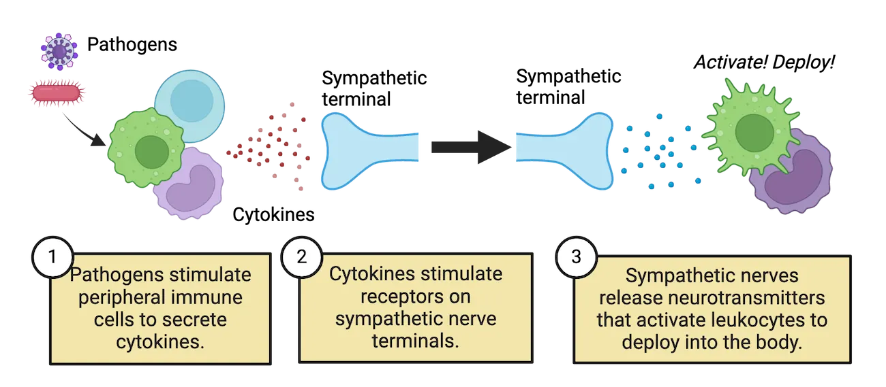
Whereas the sympathetic system is especially important for ramping up, the parasympathetic system is important for restoring homeostasis after an inflammatory challenge or stressor is initiated, primarily via the actions of the vagus nerve. Vagal efferents from the brainstem innervate the heart, gastrointestinal tract, liver, biliary system, and pancreas, among numerous other tissues (see Autonomic regulation of immune function) (Berthoud and Neuhuber, 2000). The vagus nerve is also the primary nerve to innervate the major immune organs in the periphery, including the thymus, spleen, lymph nodes and bone marrow (see A closer look at parasymphatetic nervous system-immune system interaction). Thus, it can directly and discretely affect immune function at the level of an individual organ or localized tissue.
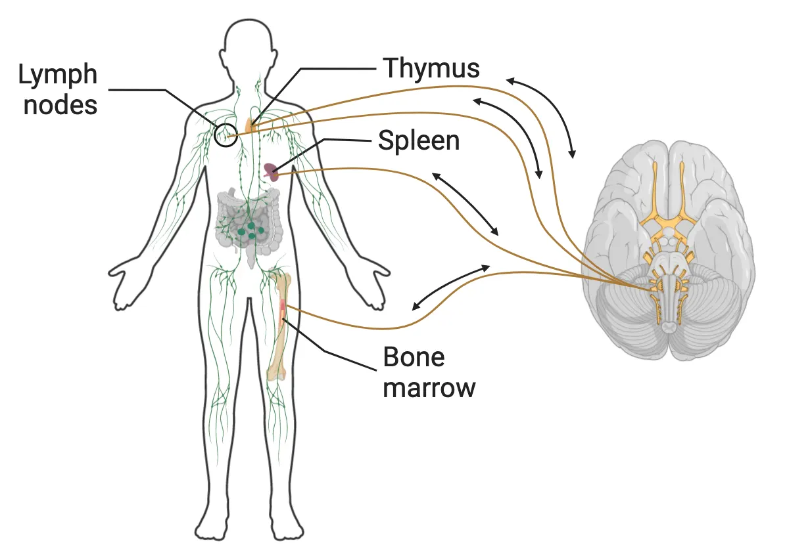
The vagus nerve also transmits information regarding the state of the periphery to the brain. In fact, more than 80% of vagal fibers are afferent, conveying sensory information from the body to the brain. Some of that input is used to help initiate response to an infection–parasympathetic fibers throughout the body respond to signs of infection and further stimulate sympathetic activity, working in concert with the direct stimulation of sympathetic fibers by cytokines. For this reason, it’s been suggested that the vagus nerve is the basis of our “sixth sense” and the reason that we have a “gut feeling” we may be sick, before we actually have any symptoms (Blaylock 1995). The importance of these innervations from the periphery to the brain has been demonstrated in many experiments which use surgical division of the vagus nerve, known as a vagotomy. Vagotomy blocks the induction of fever caused by peripherally administering the cytokine IL-1 or low doses of LPS. Vagotomy can also attenuate the sickness behaviors, e.g. decreases in behavioral exploration, caused by peripheral IL-1 administration (Luheshi et al., 2000; Hansen et al., 2001). Thus, the brain has the capacity to directly influence the peripheral immune system through specific neural pathways during peripheral immune activation and in response to all types of physiologically stressful situations.
The vagus nerve and the inflammatory reflex
Given its widespread distribution and localized innervation of specific tissues, the vagal afferent system is in an excellent position to convey immune-related stimuli to central areas via a so-called inflammatory reflex pathway (Berthoud and Neuhuber, 2000; Tracey, 2002). Just as a motor reflex within the body involves a sensory perception of pain or trauma and a rapid motor response, e.g. limb withdrawal to avoid that stimulus, the inflammatory reflex essentially describes the phenomenon that an inflammatory response mediated by parasympathetic afferent signaling and subsequent sympathetic activation is quickly followed by an anti-inflammatory response that returns the system to homeostasis. For instance, let’s say that vagal afferents in the gut are activated by cytokines due to an infection, as shown in step 1 of Inflammatory reflex. This activation quickly sends a signal up to the brain which subsequently sends a sympathetic signal back to organs like the spleen, which activates cells like T cells and macrophages for deployment as described earlier (step 2 in Inflammatory reflex). This response is rapid, like a reflex. This immune activation/inflammation is short lived however, because within minutes to hours, the vagus nerve once again jumps into action, which culminates in the release of acetylcholine (ACh) that suppresses inflammatory cytokine production by macrophages (step 3 in Inflammatory reflex).
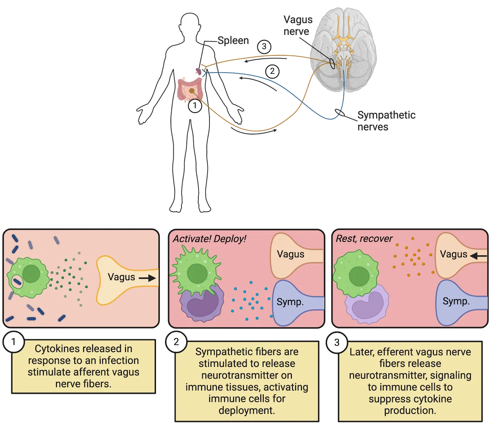
This “cholinergic anti-inflammatory response” is critical to prevent excessive immune activation, which could lead to organ failure and even death if not carefully held in check. For many years, however, the mechanisms by which this anti-inflammatory signal is received by the immune system was a mystery. The reason comes down to anatomy. It turns out that the splenic nerve which directly innervates the spleen produces norepinephrine (NE), not ACh. How, then, do macrophages in the spleen receive the ACh signal to stop producing cytokines? The answer is…wait for it…T cells! Truly groundbreaking experiments by Dr. Kevin Tracey completed in the early 2010s demonstrated this ingenious system (Rosas-Ballina et al., 2011)– during an immune response, sympathetic activation produces NE to rapidly activate macrophages. Shortly thereafter, the vagus nerve signals the splenic nerve to also produce NE which binds to a specialized subset of T cells that slowly ramp up production of ACh. This ACh binds to acetylcholine receptors on nearby macrophages to quickly shut off inflammatory cytokine production before it becomes dangerous (Vagus nerve-spleen connection). This system is a beautiful example of neuroimmune crosstalk that has stimulated a flurry of promising research designed to harness the vagus nerve “anti-inflammatory reflex” for the treatment of multiple disorders, including pathological pain and autoimmune conditions.
![Top right shows a diagram of a spleen with a vagus nerve and splenic nerve connection coming from the brain. A box zoom-in shows the vagus nerve terminal synapsed on the splenic nerve terminals and a subsequent cascade of immune cell reactions. 1) Vagus nerve signals splenic nerve to release norepinephrine. 2) Norepinephrine binds receptors on T-cells, causing release of acetylcholine. 3) Acetylcholine binds to receptors on macrophages. 4) Acetylcholine binding inhibits release of proinflammatory cytokines.](../assets/textbook/img/Image-17.25_Vagus-nerve-spleen-connection.webp)
Summary
Despite hundreds of years of prevailing dogma that the brain is “immune privileged”, we now know that the immune, endocrine, and nervous systems communicate via a number of well-defined routes. There is growing evidence that the nervous and immune systems co-evolved to keep us well. Our immune system can “learn”, changing its activity based on associations between environmental stimuli and perturbations in immune function. Cytokines or immune activation in the periphery potently activate the HPA axis leading to catecholamine and stress hormone release, which regulate immune responses. Stressor perception alone is also sufficient to profoundly impact the immune system via this response. The autonomic nervous system directly innervates the tissues of the immune system in the periphery. Immune activation of afferent fibers rapidly signals the brain to activate and mobilize the immune cells in the body via an efferent inflammatory reflex. Soon after, parasympathetic activation and release of anti-inflammatory acetylcholine leads to a tamping down of inflammation and return to homeostasis.
Key terms
Stressor, hypothalamic-pituitary-adrenal (HPA) axis, immunosuppression, autonomic nervous system, sympathetic nervous system, parasympathetic nervous system, vagus nerve, inflammatory reflexReferences
Ader, R., Kelly, K., Moynihan, J. A., Grota, L. J., & Cohen, N. (1993). Conditioned enhancement of antibody production using antigen as the unconditioned stimulus. Brain, Behavior, and Immunity, 7(4), 334–343. https://doi.org/10.1006/brbi.1993.1033
Banks, W. A., & Erickson, M. A. (2010). The blood-brain barrier and immune function and dysfunction. Neurobiology of Disease, 37(1), 26–32. https://doi.org/10.1016/j.nbd.2009.07.031
Belcher, A. M., Ferré, S., Martinez, P. E., & Colloca, L. (2018). Role of placebo effects in pain and neuropsychiatric disorders. Progress in Neuro-Psychopharmacology & Biological Psychiatry, 87(Pt B), 298–306. https://doi.org/10.1016/j.pnpbp.2017.06.003
Ben-Shaanan, T. L., Azulay-Debby, H., Dubovik, T., Starosvetsky, E., Korin, B., Schiller, M., Green, N. L., Admon, Y., Hakim, F., Shen-Orr, S. S., & Rolls, A. (2016). Activation of the reward system boosts innate and adaptive immunity. Nature Medicine, 22(8), 940–944. https://doi.org/10.1038/nm.4133
Ben-Shaanan, T. L., Schiller, M., Azulay-Debby, H., Korin, B., Boshnak, N., Koren, T., Krot, M., Shakya, J., Rahat, M. A., Hakim, F., & Rolls, A. (2018). Modulation of anti-tumor immunity by the brain's reward system. Nature Communications, 9(1), 2723. https://doi.org/10.1038/s41467-018-05283-5
Berkenbosch, F., van Oers, J., del Rey, A., Tilders, F., & Besedovsky, H. (1987). Corticotropin-releasing factor-producing neurons in the rat activated by interleukin-1. Science (New York, N.Y.), 238(4826), 524–526. https://doi.org/10.1126/science.2443979
Berthoud, H. R., & Neuhuber, W. L. (2000). Functional and chemical anatomy of the afferent vagal system. Autonomic Neuroscience: Basic & Clinical, 85(1-3), 1–17. https://doi.org/10.1016/S1566-0702(00)00215-0
Blatteis, C. M. (1992). Role of the OVLT in the febrile response to circulating pyrogens. Progress in Brain Research, 91, 409–412. https://doi.org/10.1016/s0079-6123(08)62360-2
Bordt, E. A., & Bilbo, S. D. (2020). Stressed-out T cells fragment the mind. Trends in Immunology, 41(2), 94–97. https://doi.org/10.1016/j.it.2019.12.008
Bosch, J. A., Engeland, C. G., Cacioppo, J. T., & Marucha, P. T. (2007). Depressive symptoms predict mucosal wound healing. Psychosomatic Medicine, 69(7), 597–605. https://doi.org/10.1097/PSY.0b013e318148c682
Caldwell, F. T., Graves, D. B., & Wallace, B. H. (1998). Studies on the mechanism of fever after intravenous administration of endotoxin. The Journal of Trauma, 44(2), 304–312. https://doi.org/10.1097/00005373-199802000-00012
Cohen, N., Moynihan, J. A., & Ader, R. (1994). Pavlovian conditioning of the immune system. International Archives of Allergy and Immunology, 105(2), 101–106. https://doi.org/10.1159/000236811
Dhabhar, F. S. (2000). Acute stress enhances while chronic stress suppresses skin immunity. The role of stress hormones and leukocyte trafficking. Annals of the New York Academy of Sciences, 917, 876–893. https://doi.org/10.1111/j.1749-6632.2000.tb05454.x
Dhabhar, F. S., & McEwen, B. S. (1999). Enhancing versus suppressive effects of stress hormones on skin immune function. Proceedings of the National Academy of Sciences of the United States of America, 96(3), 1059–1064. https://doi.org/10.1073/pnas.96.3.1059
Dhabhar, F. S., Miller, A. H., McEwen, B. S., & Spencer, R. L. (1996). Stress-induced changes in blood leukocyte distribution. Role of adrenal steroid hormones. Journal of Immunology (Baltimore, Md. : 1950), 157(4), 1638–1644.
Dhabhar, F. S., & Viswanathan, K. (2005). Short-term stress experienced at time of immunization induces a long-lasting increase in immunologic memory. American Journal of Physiology. Regulatory, Integrative and Comparative Physiology, 289(3), R738–R744. https://doi.org/10.1152/ajpregu.00145.2005
Fan, K. Q., Li, Y. Y., Wang, H. L., Mao, X. T., Guo, J. X., Wang, F., Huang, L. J., Li, Y. N., Ma, X. Y., Gao, Z. J., Chen, W., Qian, D. D., Xue, W. J., Cao, Q., Zhang, L., Shen, L., Zhang, L., Tong, C., Zhong, J. Y., Lu, W., … Jin, J. (2019). Stress-induced metabolic disorder in peripheral CD4+ T cells leads to anxiety-like behavior. Cell, 179(4), 864–879.e19. https://doi.org/10.1016/j.cell.2019.10.001
Hallam, J., Jones, T., Alley, J., & Kohut, M. L. (2022). Exercise after influenza or COVID-19 vaccination increases serum antibody without an increase in side effects. Brain, Behavior, and Immunity, 102, 1–10. https://doi.org/10.1016/j.bbi.2022.02.005
Hansen, M. K., O'Connor, K. A., Goehler, L. E., Watkins, L. R., & Maier, S. F. (2001). The contribution of the vagus nerve in interleukin-1beta-induced fever is dependent on dose. American Journal of Physiology. Regulatory, Integrative and Comparative Physiology, 280(4), R929–R934. https://doi.org/10.1152/ajpregu.2001.280.4.R929
Hawkins, B. T., & Davis, T. P. (2005). The blood-brain barrier/neurovascular unit in health and disease. Pharmacological Reviews, 57(2), 173–185. https://doi.org/10.1124/pr.57.2.4
Irwin, M., Patterson, T., Smith, T. L., Caldwell, C., Brown, S. A., Gillin, J. C., & Grant, I. (1990). Reduction of immune function in life stress and depression. Biological Psychiatry, 27(1), 22–30. https://doi.org/10.1016/0006-3223(90)90016-u
Kiecolt-Glaser, J. K., Marucha, P. T., Malarkey, W. B., Mercado, A. M., & Glaser, R. (1995). Slowing of wound healing by psychological stress. Lancet (London, England), 346(8984), 1194–1196. https://doi.org/10.1016/s0140-6736(95)92899-5
Lee, H. Y., Whiteside, M. B., & Herkenham, M. (1998). Area postrema removal abolishes stimulatory effects of intravenous interleukin-1beta on hypothalamic-pituitary-adrenal axis activity and c-fos mRNA in the hypothalamic paraventricular nucleus. Brain Research Bulletin, 46(6), 495–503. https://doi.org/10.1016/s0361-9230(98)00045-8
Luheshi, G. N., Bluthé, R. M., Rushforth, D., Mulcahy, N., Konsman, J. P., Goldbach, M., & Dantzer, R. (2000). Vagotomy attenuates the behavioural but not the pyrogenic effects of interleukin-1 in rats. Autonomic Neuroscience: Basic & Clinical, 85(1-3), 127–132. https://doi.org/10.1016/S1566-0702(00)00231-9
Maier, S. F., & Watkins, L. R. (1998). Cytokines for psychologists: Implications of bidirectional immune-to-brain communication for understanding behavior, mood, and cognition. Psychological Review, 105(1), 83–107. https://doi.org/10.1037/0033-295x.105.1.83
Marucha, P. T., Kiecolt-Glaser, J. K., & Favagehi, M. (1998). Mucosal wound healing is impaired by examination stress. Psychosomatic Medicine, 60(3), 362–365. https://doi.org/10.1097/00006842-199805000-00025
McKim, D. B., Weber, M. D., Niraula, A., Sawicki, C. M., Liu, X., Jarrett, B. L., Ramirez-Chan, K., Wang, Y., Roeth, R. M., Sucaldito, A. D., Sobol, C. G., Quan, N., Sheridan, J. F., & Godbout, J. P. (2018). Microglial recruitment of IL-1β-producing monocytes to brain endothelium causes stress-induced anxiety. Molecular Psychiatry, 23(6), 1421–1431. https://doi.org/10.1038/mp.2017.64
Medawar, P. B. (1948). Immunity to homologous grafted skin; the fate of skin homografts transplanted to the brain, to subcutaneous tissue, and to the anterior chamber of the eye. British Journal of Experimental Pathology, 29(1), 58–69.
Pan, W., & Kastin, A. J. (2008). Cytokine transport across the injured blood-spinal cord barrier. Current Pharmaceutical Design, 14(16), 1620–1624. https://doi.org/10.2174/138161208784705450
Rosas-Ballina, M., Olofsson, P. S., Ochani, M., Valdés-Ferrer, S. I., Levine, Y. A., Reardon, C., Tusche, M. W., Pavlov, V. A., Andersson, U., Chavan, S., Mak, T. W., & Tracey, K. J. (2011). Acetylcholine-synthesizing T cells relay neural signals in a vagus nerve circuit. Science (New York, N.Y.), 334(6052), 98–101. https://doi.org/10.1126/science.1209985
Rosenberger, P. H., Jokl, P., & Ickovics, J. (2006). Psychosocial factors and surgical outcomes: An evidence-based literature review. The Journal of the American Academy of Orthopaedic Surgeons, 14(7), 397–405. https://doi.org/10.5435/00124635-200607000-00002
Sainz, B., Loutsch, J. M., Marquart, M. E., & Hill, J. M. (2001). Stress-associated immunomodulation and herpes simplex virus infections. Medical Hypotheses, 56(3), 348–356. https://doi.org/10.1054/mehy.2000.1219
Sapolsky, R., Rivier, C., Yamamoto, G., Plotsky, P., & Vale, W. (1987). Interleukin-1 stimulates the secretion of hypothalamic corticotropin-releasing factor. Science (New York, N.Y.), 238(4826), 522–524. https://doi.org/10.1126/science.2821621
Sapolsky, R. M., Romero, L. M., & Munck, A. U. (2000). How do glucocorticoids influence stress responses? Integrating permissive, suppressive, stimulatory, and preparative actions. Endocrine Reviews, 21(1), 55–89. https://doi.org/10.1210/edrv.21.1.0389
Tracey, K. J. (2002). The inflammatory reflex. Nature, 420(6917), 853–859. https://doi.org/10.1038/nature01321
Turnbull, A. V., & Rivier, C. L. (1999). Regulation of the hypothalamic-pituitary-adrenal axis by cytokines: Actions and mechanisms of action. Physiological Reviews, 79(1), 1–71. https://doi.org/10.1152/physrev.1999.79.1.1
Weber, M. D., Godbout, J. P., & Sheridan, J. F. (2017). Repeated social defeat, neuroinflammation, and behavior: Monocytes carry the signal. Neuropsychopharmacology: Official Publication of the American College of Neuropsychopharmacology, 42(1), 46–61. https://doi.org/10.1038/npp.2016.102
Wexler, B. C., Dolgin, A. E., & Tryczynski, E. W. (1957). Effects of a bacterial polysaccharide (piromen) on the pituitary-adrenal axis: Adrenal ascorbic acid, cholesterol and histologic alterations. Endocrinology, 61(3), 300–308. https://doi.org/10.1210/endo-61-3-300
Yarlagadda, A., Alfson, E., & Clayton, A. H. (2009). The blood brain barrier and the role of cytokines in neuropsychiatry. Psychiatry (Edgmont (Pa. : Township)), 6(11), 18–22.
Practice The multiple-choice and fill-in-the-blank questions for this section are interactive and live on OpenStax, so they are not carried here: open the book on openstax.org.
17.4What Do Immune System Signals Do Once They Reach the Brain?
By the end of this section, you should be able to
- Describe the historical foundations of the field of microglial biology and its neglect for the majority of neuroscience research history.
- Describe how CNS-resident immune cells impact behavior via their interactions with neurons.
- Describe how immune activation or inflammation during critical developmental windows may disrupt normal neurodevelopment and lead to neurological disease.
We’ve covered up until now the mechanisms by which the brain and immune system send signals back and forth to one another, and some of the implications for immune system function. We’ve also discussed earlier in this chapter some of the striking changes in behavior that occur during immune system activation, and why these changes might have evolved to occur. But what happens within the brain to mediate these behavioral changes, and are there any implications for normal behavior, i.e. when we are not sick? In this section you will learn about the primary “immunocompetent” cells of the brain and why they are important for brain and behavioral function, in sickness and in health.
Immune responses within the central nervous system
Immune responses within the brain are not identical to the periphery; inflammation is severely limited, but robust communication does occur among distinct cell types using cytokines and chemokines and other neuromodulators (i.e. neurotransmitters and neuropeptides). The majority of cell types within the brain, including neurons, glial cells (astrocytes, oligodendrocytes), and cells that line the vasculature, can produce and respond to cytokines in the course of an immune response. This communication goes beyond immune activation as well. For instance, some chemokines are important for neuronal migration during development, and may act essentially as neuromodulators, relatively independent of any classic “immune” functions. Importantly, as we first introduced in Cells and Messengers of the Immune System, the brain has its own population of “resident” immune cells, microglia, which are essentially macrophages that enter the brain early in development and mediate several critical neurodevelopmental processes in addition to their functions in host defense. Microglia interact closely with neurons and can profoundly impact their function, in both health and disease. For these reasons, we will spend the majority of this section learning about these fascinating and important cells, and how their actions relate to behavior.
Microglia: a unique cell with a unique origin
During early brain development, neural progenitor cells (or stem cells) rapidly divide and differentiate into the distinct cell types that make up the CNS. These progenitors arise from a distinct layer of the developing embryo called the neuroectoderm, and give rise to essentially the entire nervous system, including neurons, astrocytes, and oligodendrocytes (see Introduction). Microglia are a notable exception to this shared origin, beginning instead as immature macrophage precursors in the extra-embryonic fetal yolk sac. Starting early in fetal development, around embryonic day 8.5 (E8.5) in mice and around 5 weeks of gestation in humans, these baby microglia begin to exit the yolk sac and enter the developing fetal nervous system (around E9.5 in mice) via the ventricles and developing vasculature. This occurs during a process called primitive hematopoiesis in which most of the tissues (spleen, liver, gut, etc) of the body are first colonized by these early macrophage precursors, many of which are long-lived and slowly give rise to subsequent tissue-resident macrophages in any given tissue throughout life (Origins of microglia).

Subsequent waves of macrophages colonize and maintain most other tissues of the body from the fetal liver and eventually the bone marrow throughout life, but the brain is unique. Once the BBB closes around 2/3rds through pregnancy in mice and the end of the first trimester in humans, the microglia that originally seeded the brain from the yolk sac will divide and expand in number, self-renewing throughout the lifespan. This means that the earliest microglia to arrive into the CNS divide to create new microglia as needed throughout life. This attribute suggests that even small changes to these early microglia could profoundly impact future brain function, a concept we discuss a bit later (Askew and Gomez-Nicola, 2018; Thion and Garel, 2020).
Beyond the primary wave of microglia described above, there is also evidence that another, smaller subpopulation of microglia, homeobox (Hoxb8)-lineage microglia, colonize the brain a few days later, traveling from the yolk sac and through the fetal liver and aorta-gonad-mesonephros (AGM), a region of the embryonic mesoderm, to appear in the brain around E12.5 (Chen et al., 2010; De et al., 2018). Interestingly, a specific loss of Hoxb8+ microglia results in an overall reduction of microglia in the brain and a compulsive over-grooming phenotype in mice, a behavior that has been compared to obsessive compulsive behavior in humans (Chen et al., 2010).
This migratory mechanism for how microglia are introduced into the brain explains why microglia are known as “resident” immune cells of the CNS; much as immigrants to a new country are not native born but can become permanent residents and profoundly impact their environments. Remarkably, some of the earliest neuroanatomists to identify and describe microglia within the nervous system correctly surmised that these cells were “a third element” (Tremblay et al., 2015), as we discuss in the following section.
History of Neuroscience: The discovery of microglia
In 1852, a boy named Santiago Ramón y Cajal was born in Spain and forever changed the face of modern science. He was an aspiring artist that grew up to become a neuroanatomist and pathologist and shared the Nobel Prize in Medicine with Camillo Golgi in 1906 for their development of novel techniques to visualize and describe the nervous system. Cajal is widely viewed as the “father of neuroscience,” based in large part on the exquisite drawings he made of the fine features of the nervous system, using no more than a simple light microscope. Cajal is also famous for his legacy of trainees and students (Students of Santiago Ramón y Cajal), counting among them icolás Achúcarro and Pío del Río Hortega (called by many the “father of microglia”) who first thoroughly described microglia and speculated on their functions based on methods to observe the fine processes of these cells and thus identify them as having a unique origin and lineage.
Hortega’s discovery was apparently first met with skepticism and derision by Cajal as it contradicted his own classification of the cells as a type of oligodendrocyte. Eventually Hortega’s careful body of work won out and we now recognize the cells as unique, with a cellular origin from the yolk sac and several specialized functions (Tremblay et al., 2015). Nonetheless, for the vast majority of the time since their discovery, around 100 years ago, these fascinating and important cells were ignored. Considering the long timescales of disciplines like medicine and physiology, our modern knowledge of their lineage and function is very new, having emerged within the last 20 years or less. So what changed? In large part, technology. Specifically, the ability to see microglia in action. Using a new method known as 2-photon microscopy, which allows researchers to visualize brain cells tagged with a fluorescent dye to observe their activities in “real time” in intact, living brains (usually through a clear window placed into the skull or via a very thin, transparent part of the skull), two neuroscientists near simultaneously in 2005 made an astounding discovery about microglia based simply on watching them (Davalos et al., 2005; Nimmerjahn et al., 2005).
Back in 2005, the prevailing dogma of the time was that microglia are largely static, “quiescent” (meaning resting) cells that sit in the brain and wait for an immune disruption like infection or injury to occur. But this theory didn’t “sit” well for many (forgive the pun); given that microglia make up ~10-15% of the total cells in the brain, why would the brain invest so much energy in these cells only to have them function during relatively rare occurrences of CNS infection or injury? It turns out, they don’t. The researchers were able to image these cells because of a genetic trick which inserts a green fluorescent protein into them so they glow bright green. Using this new type of imaging researchers discovered that microglia in a healthy, normal brain are extremely active all of the time, extending and retracting their processes into their nearby extracellular environments, even when a mouse is resting quietly (Nimmerjahn et al., 2005). Human microglia do this too and you can watch it in action here. If you compare them to cells like neurons, they are astoundingly active, wiggling their processes around like little spiders in your brain on the order of minutes. Given this rapid timescale, it is estimated that microglia scan the entire surface area of the brain in just a few hours. Moreover, if the researchers applied a brief laser injury to a part of cortex during one of these experiments, the microglia rapidly (within seconds!) moved their processes over to the point of injury (Davalos et al., 2005), like bees protecting their honeycomb, walling off and containing the injury to protect the surrounding tissue. You can see this effect in Photon imaging of microglia, where a cloud of green microglia rush around the laser pulse location within minutes. They are indeed the soldiers of the brain in this case and are anything but quiescent the rest of the time.
![An array of fluorescent microscopy images from control brain and brain 10s or 30s after laser. These are real time in vivo multiphoton imaging of microglia in the cerebral cortex of a transgenic mouse. Images are at 0 min to 150 min. Microglia are made green and blood vessels are also shown in blue. The green signal in the laser treated brains shows that damaging tissue with a laser pulse cause microglia to migrate towards and send processes to the damage site (a green cloud emerges over time right around the location of the pulse).](../assets/textbook/img/Image-17.08_2-photon-imaging-of-microglia.webp)
What are they doing?
What are microglia doing when they wave their processes in and out of the surrounding tissue? At this point, we don’t entirely know, but we have some good clues. Their activities include detecting and responding to neural activity, removing debris and dead and dying cells, and chomping down on unneeded or unwanted synapses (Microglia, multifaceted functions). Some of these activities have been directly linked to changes in behavior, including cognitive and social behaviors.
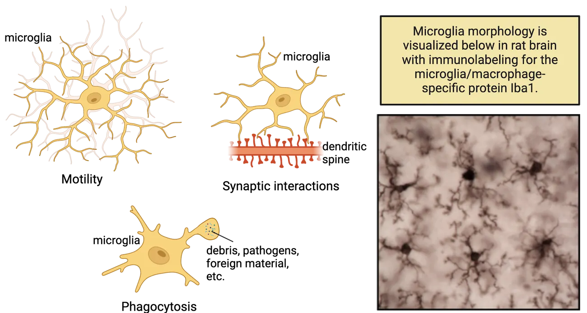
“Listening” to neural activity
Using the same imaging technique described above, researchers suspected that microglia might be moving their processes in and out of synapses, the small gaps in between neurons, in order to sample or “listen” to their chemical language, i.e., the neurotransmitters passed from cell to cell. Microglia have receptors for many of the major neurotransmitters, including serotonin, dopamine, and ATP. In one early experiment, Wake and colleagues discovered that microglial processes make contacts with synapses about 1x per hour. Moreover, they make more contacts with synapses from active neurons, as drugs like the sodium channel blocker tetrodotoxin (TTX) which reduces neuronal activity also reduces the amount of contact between microglia and the silenced neuron (Wake et al., 2009). Similar results were obtained when animals were reared in complete darkness during a critical period of visual cortex development (Tremblay et al., 2010). In contrast, increasing neuronal activity in zebrafish by repetitive visual stimulation resulted in increased contact by microglial processes (Li et al., 2012). Therefore, microglia appear to monitor synaptic function and alter their behavior in response to changes in neuronal activity.
Often the result of all this listening and contact is to engage in phagocytic (eating) behavior. For instance, after stroke, microglia contact neurons within the affected region for much longer, and this is followed by the disappearance of presynaptic boutons from the affected cells, presumably removed by microglia as a protective mechanism designed to dampen cell damage (Wake et al., 2009). In general, microglia are very proficient at eating cells and parts of cells. During normal development, many cells die via a process called apoptosis (programmed cell death), and microglial cell division closely tracks the peaks in cell death within the early postnatal brain (see Introduction). Microglia also regulate the number of developing neural stem cells within the prenatal cortex via phagocytosis even independent of cell death (Cunningham et al., 2013). This is in keeping with the fact that microglia enter the developing brain so early, much before other glial cells like astrocytes and oligodendrocytes are born. Notably, gene mutations that cause microglia to die early in development result in profound neuroanatomical abnormalities including loss of corpus collosum, ventricular enlargement, and even death in rodents and in humans (Hume et al., 2019; Oosterhof et al., 2019), pointing to the critical role of these cells in fetal brain development. Moreover, one of the most exciting discoveries of the past decade has revealed that microglia are also essential for eating neuronal elements postnatally, in a process called synaptic pruning.
Synaptic pruning
During postnatal brain development there are intense periods of exuberant formation of synaptic connections between neurons followed by a “pruning back” of inappropriate or excessive synapses (see Introduction).
Given their proclivity for eating things, it was long suspected that microglia might play a role in synaptic pruning. However, it was previously unclear what molecular signals may promote synapse elimination by microglia and, more importantly, if this process was restricted to states of injury, or if it may have broader implications for shaping neuronal connectivity. These questions were methodically addressed by Beth Stevens and Dorothy Schafer in the context of visual system development (see Introduction). Axons from retinal ganglion cells in the eyes form many synaptic connections in the lateral geniculate nucleus (LGN) of the thalamus early in development. These imprecise and overlapping projections are then selectively eliminated in an activity-dependent fashion, resulting in remarkably precise eye-specific segregation of synaptic input (Luo and O’Leary, 2005). During the early postnatal period when synaptic refinement is still ongoing, microglial phagocytosis of retinal ganglion cell inputs is high, compared to time periods after eye-segregation is established (Schafer et al., 2012). This synaptic pruning is dependent upon neuronal activity. When neuronal activity in one eye is inhibited, microglia preferentially engulf and prune retinal ganglion cell input from that eye; conversely, when neuronal activity in one eye is augmented, microglia preferentially engulf and prune retinal ganglion cell input from the opposite eye. Thus, microglia participate in synaptic refinement during development by engulfing the synapse with relatively “weak” synaptic strength and then pruning it away. This general principle is diagrammed in Microglial synaptic pruning.
![Top shows a diagram of a synapse with pre- and post-synaptic terminals being engulfed by a microglial cell and then the synapse disappearing (labeled as pruning), becoming bits of debris inside the microglial process that engulfed them. Bottom is a diagram of a microglial cell with many processes spread over a collection of synapses color-coded to suggest different synapse types intermixed. Two diagrams below that show two different possible outcomes. In one, the synapses are segregated by color, showing that microglial synapse elimination helps to refine circuits. In the other, the synapse types remain intermixed to show that if microglia are impaired, insufficient synaptic pruning leaves circuits unrefined.](../assets/textbook/img/Image-17.09_Microglial-synaptic-pruning.webp)
A more recent study has extended this landmark paper by demonstrating some of the behavioral consequences of microglial synaptic pruning. Yan Gu and colleagues found that microglia prune synapses in the hippocampus, an important region for learning and memory. Interestingly, if microglial pruning was inhibited in this region, the mice maintained a fear memory for much longer than if microglia remained unperturbed. Follow-up studies showed that microglia seem to target active memory supporting cells within the hippocampus as a component of normal forgetting (Wang et al., 2020). These exciting data may someday have implications for the treatment of stress disorders like PTSD via targeting the neuroimmune system.
Finally, recent experiments have also determined that microglia may even eliminate precise neurotransmitter receptors within certain synapses, and that this elimination is important for normal behavior. For instance, dopamine receptors, specifically Type 1 receptors known as D1r, are critical for the developmental regulation of social behavior in rodents. D1r numbers peak within the nucleus accumbens (a critical reward region) during a discrete period of adolescence in rats and then decline to adult levels. Moreover, this developmental decline in D1rs is directly linked to the normal developmental change you see in social play behavior in rats, as well as other “reward” driven behaviors that adolescents exhibit, like increased risk-taking behaviors and illicit drug use. Until recently, the mechanism by which this normal developmental decline in D1rs during adolescence occurs was unknown. Enter microglia! A recent paper shows that microglia very precisely prune these dopamine D1rs in adolescence in male rats. Moreover, blocking the removal of D1rs by microglia leads to a disruption of normal social behavior (Kopec et al., 2018) (Microglia regulate social behavior).
![In the upper left, a 3D fluorescent image shows microglial processes surrounding space labeled as “D1r contact”. The rest of the image is a diagram of dendrites zoomed in from the nucleus accumbens of a rodent brain. On the left is a dendrite covered with many D1 receptors and a microglial cell engulfing some of them. D1 receptors are rapidly eliminated by microglia from nucleus accumbens neurons during adolescence in males. On the right, a dendrite with few D1 receptors is shown. As a result of microglial pruning, adult nucleus accumbens have less D1 receptors. If the pruning is prevented, males show disrupted social behavior.](../assets/textbook/img/Image-17.27_Microglia-regulate-social-behavior.webp)
This role for microglia in the developmental elimination of dopamine receptors during adolescence raises the possibility that microglial pruning is also involved in the organization of other neural systems that regulate specific behaviors. Moreover, the data bring up very intriguing questions about how immune activation during critical windows of neural development, such as the prenatal, early neonatal, and adolescent periods might impact microglial function, including their pruning functions, and therefore long-term brain and behavioral outcomes. Interestingly, this receptor pruning by microglia was only observed in males. Female rats used a very different mechanism. This is only one of many examples of sex differences in microglial function that have emerged in recent years (Lynch 2022). This is currently a very active and exciting area of research in neuroscience because of the potential implications for neurological disorders, as we discuss in the next sections.
Developmental perspective: A starring role in neurological disorders
Up to this point, we’ve largely discussed the non-immune functions of microglia. Of course, let’s not forget that microglia remain the primary immunocompetent cells of the CNS. They are the major source of cytokines. They share many functional and molecular characteristics with macrophages outside the brain, and play an important role in phagocytosing dead and dying cells and debris (Marín-Teva et al., 2004; Bessis et al., 2007). The fact that microglia can both respond rapidly to immune system signals with their own production of inflammatory signaling molecules (e.g., cytokines), as well as perform functions such as prune synapses and eat cells, has led to the hypothesis that immune activation, especially during discrete developmental windows, may disrupt the latter functions (proper eating and pruning), and thereby disrupt normal brain development and function (Hanamsagar and Bilbo, 2017; Bilbo et al., 2018; Dziabis and Bilbo, 2021).
Indeed, there is a growing literature examining the impact of immune activation, such as following infection or certain stressors, particularly during pregnancy and during the early perinatal period, on the developing brain, and thus the risk of a number of neurological disorders. This association has long been recognized in the epidemiological literature: maternal infection with a variety of pathogens during pregnancy, including influenza, streptococcus, and toxoplasma, is a risk factor for neurodevelopmental disorders in the developing offspring, including autism spectrum disorder (ASD) and schizophrenia (Atladóttir et al., 2010; Knuesel et al., 2014). Interestingly, the complement component (C4) gene is associated with synaptic refinement and has been linked to schizophrenia in humans, with greater expression associated with increased risk (Sekar et al., 2016). It is not yet clear what the role of microglia is in the association, if any, but given their important role in pruning and their robust response to immune activation, an association would not be surprising.
The type of infection during the prenatal period doesn’t seem to be key for links between maternal infection during gestation and neurodevelopmental disorders, as associations have been noted with bacterial, viral, and parasitic pathogens. In rodent models, injection of LPS or a viral mimic or even exposure to environmental pollutants such as air pollution during gestation induces a so-called maternal immune activation (MIA) response along with behavioral abnormalities in the offspring consistent with some features of human autism and schizophrenia, such as social deficits (Smith et al., 2007; Bilbo et al., 2018; Kwon et al., 2022; Block et al., 2022).
The consequences of early-life immune activation are also not confined to the prenatal period. Neonatal (right after birth) bacterial infection in rats induces a persistent change in microglial function within the brain such that they are more vulnerable (or “primed”) to overreact to a subsequent LPS challenge in adulthood, an inflammatory reaction that results in cognitive problems (memory deficits) (Williamson et al., 2011). Similarly, mice that receive LPS as juveniles (postnatal day 14) are more susceptible to a stressor during adolescence due to persistent changes in their microglia, which results in excess synaptic pruning within the prefrontal cortex and depressive-like behaviors (Cao et al., 2021).
Notably, across species, perturbations during the adolescent period often have profound impacts on long-term behavior, as we alluded to above. For instance, the brain is highly neurobiologically vulnerable to addiction and social stress in humans at this time (Chambers et al., 2003; Kopec et al., 2019) (see Introduction). Rodents that are exposed to chronic stressors as adolescents have increased anxiety-like behaviors weeks after exposure, much longer than rodents that went through the same stressors as adults (Yohn and Blendy, 2017; Cotella et al., 2019). Interestingly, administration of minocycline, a microglial inflammatory inhibitor, can prevent the development of schizophrenia-like behaviors following an adolescent stressor in mice, providing more support for the critical role of microglia in both the initial wiring and the refinement of circuits up through the adolescent period (Giovanoli et al., 2016).
Finally, moving beyond early developmental windows, there have also been several recent examples of how the normal phagocytic or synaptic pruning behavior of microglia may become reactivated or dysregulated later in life, contributing to disease and neurodegeneration. For example, in both Multiple Sclerosis and Alzheimer’s disease, microglia wrongly engulf active synapses that are still very much in use (Hong et al., 2016; Werneburg et al., 2020). What are the mechanisms by which microglia go rogue? There is evidence that changes in microglia themselves may be key. Intriguing work by Anne Schaefer and colleagues has demonstrated that microglia possess different clearing functions in distinct brain regions commensurate with the cell clearing requirements of those regions. Specifically, microglia in the cerebellum clear many more cells compared to the striatum due to the much higher levels of normal cell death and turnover in the cerebellum (Ayata et al., 2018).
It is not clear what leads to the aberrant activation or “reprogramming” of microglia outside of experimental conditions, but a number of environmental factors which we have spoken about, such as infection, toxicants, and stressors, are hypothesized to lead to or increase inflammation and thereby result in aberrant pruning or phagocytosis during aging. Taken together, the results of both human and animal studies reviewed above show that this is an important and rapidly developing area of neuroscience right now, especially given the startling percentages of neurodegenerative diseases that are predicted for the coming decades as the population ages. The good news is that as we learn and appreciate more about the understudied role of the immune system in these nervous system pathologies, we can identify new and novel therapies to target and treat them.
Summary
Microglia are specialized macrophages that colonize the developing brain and spinal cord from the fetal yolk sac early in development. They are the primary immune cells of the CNS and thus primary producers of cytokines, chemokines, and other neuromodulatory substances. Microglia were virtually ignored for the vast majority of neuroscience research, but we now know that they play critical roles in synaptic plasticity via actions such as pruning and phagocytosis of neural stem cells in the healthy CNS, in addition to their roles as immune cells. Given that they wear two hats—both building a normal brain and responding to immune activation and other threats to homeostasis—there is intense interest in the possibility that aberrant immune activation by diverse environmental factors or exposures during discrete windows of development and even aging could lead to pathology. These data can hopefully lead to novel treatments or interventions.
Key terms
Neuroectoderm, fetal yolk sac, primitive hematopoiesis, synaptic pruning, maternal immune activation (MIA)References
Atladóttir, H. O., Thorsen, P., Østergaard, L., Schendel, D. E., Lemcke, S., Abdallah, M., & Parner, E. T. (2010). Maternal infection requiring hospitalization during pregnancy and autism spectrum disorders. Journal of Autism and Developmental Disorders, 40(12), 1423–1430. https://doi.org/10.1007/s10803-010-1006-y
Ayata, P., Badimon, A., Strasburger, H. J., Duff, M. K., Montgomery, S. E., Loh, Y. E., Ebert, A., Pimenova, A. A., Ramirez, B. R., Chan, A. T., Sullivan, J. M., Purushothaman, I., Scarpa, J. R., Goate, A. M., Busslinger, M., Shen, L., Losic, B., & Schaefer, A. (2018). Epigenetic regulation of brain region-specific microglia clearance activity. Nature Neuroscience, 21(8), 1049–1060. https://doi.org/10.1038/s41593-018-0192-3
Bessis, A., Béchade, C., Bernard, D., & Roumier, A. (2007). Microglial control of neuronal death and synaptic properties. Glia, 55(3), 233–238. https://doi.org/10.1002/glia.20459
Bilbo, S. D., Block, C. L., Bolton, J. L., Hanamsagar, R., & Tran, P. K. (2018). Beyond infection - Maternal immune activation by environmental factors, microglial development, and relevance for autism spectrum disorders. Experimental Neurology, 299(Pt A), 241–251. https://doi.org/10.1016/j.expneurol.2017.07.002
Block, C. L., Eroglu, O., Mague, S. D., Smith, C. J., Ceasrine, A. M., Sriworarat, C., Blount, C., Beben, K. A., Malacon, K. E., Ndubuizu, N., Talbot, A., Gallagher, N. M., Chan Jo, Y., Nyangacha, T., Carlson, D. E., Dzirasa, K., Eroglu, C., & Bilbo, S. D. (2022). Prenatal environmental stressors impair postnatal microglia function and adult behavior in males. Cell Reports, 40(5), 111161. https://doi.org/10.1016/j.celrep.2022.111161
Cao, P., Chen, C., Liu, A., Shan, Q., Zhu, X., Jia, C., Peng, X., Zhang, M., Farzinpour, Z., Zhou, W., Wang, H., Zhou, J. N., Song, X., Wang, L., Tao, W., Zheng, C., Zhang, Y., Ding, Y. Q., Jin, Y., Xu, L., & Zhang, Z. (2021). Early-life inflammation promotes depressive symptoms in adolescence via microglial engulfment of dendritic spines. Neuron, 109(16), 2573–2589.e9. https://doi.org/10.1016/j.neuron.2021.06.012
Chambers, R. A., Taylor, J. R., & Potenza, M. N. (2003). Developmental neurocircuitry of motivation in adolescence: A critical period of addiction vulnerability. The American Journal of Psychiatry, 160(6), 1041–1052. https://doi.org/10.1176/appi.ajp.160.6.1041
Chen, S. K., Tvrdik, P., Peden, E., Cho, S., Wu, S., Spangrude, G., & Capecchi, M. R. (2010). Hematopoietic origin of pathological grooming in Hoxb8 mutant mice. Cell, 141(5), 775–785. https://doi.org/10.1016/j.cell.2010.03.055
Cooper, S. J. (2005). Donald O. Hebb's synapse and learning rule: A history and commentary. Neuroscience and Biobehavioral Reviews, 28(8), 851–874. https://doi.org/10.1016/j.neubiorev.2004.09.009
Cotella, E. M., Gómez, A. S., Lemen, P., Chen, C., Fernández, G., Hansen, C., Herman, J. P., & Paglini, M. G. (2019). Long-term impact of chronic variable stress in adolescence versus adulthood. Progress in Neuro-Psychopharmacology & Biological Psychiatry, 88, 303–310. https://doi.org/10.1016/j.pnpbp.2018.08.003
Cunningham, C. L., Martínez-Cerdeño, V., & Noctor, S. C. (2013). Microglia regulate the number of neural precursor cells in the developing cerebral cortex. The Journal of Neuroscience: The Official Journal of the Society for Neuroscience, 33(10), 4216–4233. https://doi.org/10.1523/JNEUROSCI.3441-12.2013
Davalos, D., Grutzendler, J., Yang, G., Kim, J. V., Zuo, Y., Jung, S., Littman, D. R., Dustin, M. L., & Gan, W. B. (2005). ATP mediates rapid microglial response to local brain injury in vivo. Nature Neuroscience, 8(6), 752–758. https://doi.org/10.1038/nn1472
De, S., Van Deren, D., Peden, E., Hockin, M., Boulet, A., Titen, S., & Capecchi, M. R. (2018). Two distinct ontogenies confer heterogeneity to mouse brain microglia. Development (Cambridge, England), 145(13), dev152306. https://doi.org/10.1242/dev.152306
Dziabis, J. E., & Bilbo, S. D. (2022). Microglia and sensitive periods in brain development. Current Topics in Behavioral Neurosciences, 53, 55–78. https://doi.org/10.1007/7854_2021_242
Giovanoli, S., Engler, H., Engler, A., Richetto, J., Feldon, J., Riva, M. A., Schedlowski, M., & Meyer, U. (2016). Preventive effects of minocycline in a neurodevelopmental two-hit model with relevance to schizophrenia. Translational Psychiatry, 6(4), e772. https://doi.org/10.1038/tp.2016.38
Hume, D. A., Caruso, M., Ferrari-Cestari, M., Summers, K. M., Pridans, C., & Irvine, K. M. (2020). Phenotypic impacts of CSF1R deficiencies in humans and model organisms. Journal of Leukocyte Biology, 107(2), 205–219. https://doi.org/10.1002/JLB.MR0519-143R
Hanamsagar, R., & Bilbo, S. D. (2017). Environment matters: Microglia function and dysfunction in a changing world. Current Opinion in Neurobiology, 47, 146–155. https://doi.org/10.1016/j.conb.2017.10.007
Hong, S., Beja-Glasser, V. F., Nfonoyim, B. M., Frouin, A., Li, S., Ramakrishnan, S., Merry, K. M., Shi, Q., Rosenthal, A., Barres, B. A., Lemere, C. A., Selkoe, D. J., & Stevens, B. (2016). Complement and microglia mediate early synapse loss in Alzheimer mouse models. Science (New York, N.Y.), 352(6286), 712–716. https://doi.org/10.1126/science.aad8373
Knuesel, I., Chicha, L., Britschgi, M., Schobel, S. A., Bodmer, M., Hellings, J. A., Toovey, S., & Prinssen, E. P. (2014). Maternal immune activation and abnormal brain development across CNS disorders. Nature Reviews. Neurology, 10(11), 643–660. https://doi.org/10.1038/nrneurol.2014.187
Kopec, A. M., Smith, C. J., Ayre, N. R., Sweat, S. C., & Bilbo, S. D. (2018). Microglial dopamine receptor elimination defines sex-specific nucleus accumbens development and social behavior in adolescent rats. Nature Communications, 9(1), 3769. https://doi.org/10.1038/s41467-018-06118-z
Kopec, A. M., Smith, C. J., & Bilbo, S. D. (2019). Neuro-immune mechanisms regulating social behavior: Dopamine as mediator?. Trends in Neurosciences, 42(5), 337–348. https://doi.org/10.1016/j.tins.2019.02.005
Kwon, H. K., Choi, G. B., & Huh, J. R. (2022). Maternal inflammation and its ramifications on fetal neurodevelopment. Trends in Immunology, 43(3), 230–244. https://doi.org/10.1016/j.it.2022.01.007
Li, Y., Du, X. F., Liu, C. S., Wen, Z. L., & Du, J. L. (2012). Reciprocal regulation between resting microglial dynamics and neuronal activity in vivo. Developmental Cell, 23(6), 1189–1202. https://doi.org/10.1016/j.devcel.2012.10.027
Luo, L., & O'Leary, D. D. (2005). Axon retraction and degeneration in development and disease. Annual Review of Neuroscience, 28, 127–156. https://doi.org/10.1146/annurev.neuro.28.061604.135632
Lynch, M. A. (2022). Exploring sex-related differences in microglia may be a game-changer in precision medicine. Frontiers in Aging Neuroscience, 14, 868448. https://doi.org/10.3389/fnagi.2022.868448
Marín-Teva, J. L., Dusart, I., Colin, C., Gervais, A., van Rooijen, N., & Mallat, M. (2004). Microglia promote the death of developing Purkinje cells. Neuron, 41(4), 535–547. https://doi.org/10.1016/s0896-6273(04)00069-8
Nguyen, P. T., Dorman, L. C., Pan, S., Vainchtein, I. D., Han, R. T., Nakao-Inoue, H., Taloma, S. E., Barron, J. J., Molofsky, A. B., Kheirbek, M. A., & Molofsky, A. V. (2020). Microglial remodeling of the extracellular matrix promotes synapse plasticity. Cell, 182(2), 388–403.e15. https://doi.org/10.1016/j.cell.2020.05.050
Nimmerjahn, A., Kirchhoff, F., & Helmchen, F. (2005). Resting microglial cells are highly dynamic surveillants of brain parenchyma in vivo. Science (New York, N.Y.), 308(5726), 1314–1318. https://doi.org/10.1126/science.1110647
Oosterhof, N., Chang, I. J., Karimiani, E. G., Kuil, L. E., Jensen, D. M., Daza, R., Young, E., Astle, L., van der Linde, H. C., Shivaram, G. M., Demmers, J., Latimer, C. S., Keene, C. D., Loter, E., Maroofian, R., van Ham, T. J., Hevner, R. F., & Bennett, J. T. (2019). Homozygous mutations in CSF1R cause a pediatric-onset leukoencephalopathy and can result in congenital absence of microglia. American Journal of Human Genetics, 104(5), 936–947. https://doi.org/10.1016/j.ajhg.2019.03.010
Schafer, D. P., Lehrman, E. K., Kautzman, A. G., Koyama, R., Mardinly, A. R., Yamasaki, R., Ransohoff, R. M., Greenberg, M. E., Barres, B. A., & Stevens, B. (2012). Microglia sculpt postnatal neural circuits in an activity and complement-dependent manner. Neuron, 74(4), 691–705. https://doi.org/10.1016/j.neuron.2012.03.026
Sekar, A., Bialas, A. R., de Rivera, H., Davis, A., Hammond, T. R., Kamitaki, N., Tooley, K., Presumey, J., Baum, M., Van Doren, V., Genovese, G., Rose, S. A., Handsaker, R. E., Schizophrenia Working Group of the Psychiatric Genomics Consortium, Daly, M. J., Carroll, M. C., Stevens, B., & McCarroll, S. A. (2022). Author correction: Schizophrenia risk from complex variation of complement component 4. Nature, 601(7892), E4–E5. https://doi.org/10.1038/s41586-021-04202-x
Smith, S. E., Li, J., Garbett, K., Mirnics, K., & Patterson, P. H. (2007). Maternal immune activation alters fetal brain development through interleukin-6. The Journal of Neuroscience: The Official Journal of the Society for Neuroscience, 27(40), 10695–10702. https://doi.org/10.1523/JNEUROSCI.2178-07.2007
Wake, H., Moorhouse, A. J., Jinno, S., Kohsaka, S., & Nabekura, J. (2009). Resting microglia directly monitor the functional state of synapses in vivo and determine the fate of ischemic terminals. The Journal of Neuroscience: The Official Journal of the Society for Neuroscience, 29(13), 3974–3980. https://doi.org/10.1523/JNEUROSCI.4363-08.2009
Wang, C., Yue, H., Hu, Z., Shen, Y., Ma, J., Li, J., Wang, X. D., Wang, L., Sun, B., Shi, P., Wang, L., & Gu, Y. (2020). Microglia mediate forgetting via complement-dependent synaptic elimination. Science (New York, N.Y.), 367(6478), 688–694. https://doi.org/10.1126/science.aaz2288
Werneburg, S., Jung, J., Kunjamma, R. B., Ha, S. K., Luciano, N. J., Willis, C. M., Gao, G., Biscola, N. P., Havton, L. A., Crocker, S. J., Popko, B., Reich, D. S., & Schafer, D. P. (2020). Targeted complement inhibition at synapses prevents microglial synaptic engulfment and synapse loss in demyelinating disease. Immunity, 52(1), 167–182.e7. https://doi.org/10.1016/j.immuni.2019.12.004
Williamson, L. L., Sholar, P. W., Mistry, R. S., Smith, S. H., & Bilbo, S. D. (2011). Microglia and memory: Modulation by early-life infection. The Journal of Neuroscience: The Official Journal of the Society for Neuroscience, 31(43), 15511–15521. https://doi.org/10.1523/JNEUROSCI.3688-11.2011
Yohn, N. L., & Blendy, J. A. (2017). Adolescent chronic unpredictable stress exposure is a sensitive window for long-term changes in adult behavior in mice. Neuropsychopharmacology: Official Publication of the American College of Neuropsychopharmacology, 42(8), 1670–1678. https://doi.org/10.1038/npp.2017.11
Practice The multiple-choice and fill-in-the-blank questions for this section are interactive and live on OpenStax, so they are not carried here: open the book on openstax.org.
Adapted from Introduction to Behavioral Neuroscience by OpenStax, licensed under CC BY-NC-SA 4.0. Access for free at openstax.org. Changes: set in this site’s own pages and type, the images recompressed, the interactive exercises and videos linked rather than carried. This adaptation is offered under the same licence.